VÍDEOS DE TEATRO MUSICAL
MUSICAL THEATRE VIDEOS
MUSICAL THEATRE VIDEOS
| Portada Cover |
Titulo Title |
Año Year |
Idioma Language |
Formato Format |
Resolución Resolution |
Elenco Cast |
Notas Notes |
|---|---|---|---|---|---|---|---|
| 3 Musketiers | 2003 | NL | mp4 | 576p | Henk Poort, Cees Geel, Rein Kolpa, Bastiaan Ragas, Tooske Ragas, Pia Douwes | ||
| The 5,000 Fingers of Dr. T. | 1953 | EN | mp4 | 720p | Peter Lind Hayes, Mary Healy, Hans Conried, Tommy Rettig, Tony Butala, Noel Cravat, Robert Heasley, Jack Heasley, Alan Aric, Henry Kulky | ||
| 13 | 2022 | EN | mp4 | 1080p | Eli Golden, Josh Peck, Debra Messing, Peter Hermann, Rhea Perlman, Gabriella Uhl, Ramon Reed, JD McCrary, Frankie McNellis, Lindsey Blackwell, Jonathan Lengel | ||
| 21 Chump Street | 2014 | EN | mp4 | 480p | Lin-Manuel Miranda, Anthony Ramos, Lindsay Mendez, Alex Boniello, Gerard Canonico, Antwaun Holley | ||
| 42nd Street | 1933 | EN | mp4 | 720p | Dick Powell, Ruby Keeler, Warner Baxter, Bebe Daniels, George Brent, Guy Kibbee, Una Merkel, Ginger Rogers, Ned Sparks, Allen Jenkins, Edward Nugent, Robert McWade, George E. Stone, Toby Wing, Louise Beavers, Charles Lane, Wallis Clark, Tom Kennedy, Harry Akst, George Irving, Clarence Nordstrum, Jack La Rue, Henry B. Walthall, Jayne Shadduck, Lyle Talbot, Dorothy Coonan Wellman, Dennis O'Keefe | ||
| 42nd Street: The Musical | 2019 | EN | mp4 | 1080p | Bonnie Langford, Tom Lister, Clare Halse, Philip Bertioli | ||
| 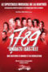 | 1776 | 1972 | EN | mp4 | 1080p | William Daniels, Howard Da Silva, Ken Howard, Blythe Danner, Donald Madden, John Cullum, Roy Poole, David Ford, Ron Holgate, Gumball Williams, William Hansen, Ray Middleton, Virginia Vestoff, Howard Caine | |
| 1789 : Les Amants de la Bastille | 2013 | EN | mp4 | 720p | Louis Delort, Camille Lou, Rod Janois, Roxane Le Texier | ||
| Abbacadabra | 1985 | EN | mp4 | 576p | Ron Brandsteder, Nancy Dubbeldeman, Bianca Folkers, Nico Haak, Jose Hoebee, Bennie Neyman, Bonnie St. Claire, Joost Timp | ||
| Acorn Antiques! The Musical | 2006 | EN | mp4 | 576p | Julie Walters, Celia Imrie, Duncan Preston, Neil Morrissey, Josie Lawrence, Sally Ann Triplett | ||
| Across The Universe | 2007 | EN | mp4 | 720p | Evan Rachel Wood, Jim Sturgess, Joe Anderson, Dana Fuchs, Martin Luther, T.V. Carpio, Spencer Liff, Lisa Hogg, Nicholas Lumley, Michael Ryan, Angela Mounsey, Robert Clohessy, Erin Elliott, Christopher Tierney, Curtis Holbrook, Bono, Salma Hayek, Mandy Gonzalez, Destan Owens, Cicily Daniels, Saycon Sengbloh, Sam Kitchin, Chris McGarry, Frank Hopf, Logan Marshall-Green, Ted Lochwyn, William Atkinson | ||
| Aggiungi Un Posto A Tavola | 1978 | IT | mp4 | 576p | Johnny Dorelli, Paolo Panelli, Bice Valori, Renato Turi, Jenny Tamburi, Ugo Maria Morosi, Carlo Piantadosi | ||
| All That Jazz | 1980 | EN | mp4 | 720p | Roy Scheider, Jessica Lange, Leland Palmer, Ann Reinking, Ben Vereen, Cliff Gorman, Erzsebet Foldi, Michael Tolan, Max Wright, William LeMassena, Irene Kane, Deborah Geffner, Kathryn Doby, Anthony Holland, Robert Hitt, David Margulies, Sue Paul, Keith Gordon, Frankie Man, Alan Heim, John Lithgow, Sandahl Bergman, CCH Pounder, Wallace Shawn, Nicole Fosse | ||
| An American in Paris | 1951 | EN | mp4 | 720p | Gene Kelly, Leslie Caron, Oscar Levant, Georges Guétary, Nina Foch, Anna Q. Nilsson, John Eldredge, Hayden Rorke, Dudley Field Malone, Ann Codee, Eugene Borden, Martha Bamattre, Madge Blake, Noel Neill, Andrée Guy, Claude Guy | ||
| An American in Paris: The Musical | 2018 | EN | mp4 | 720p | Robert Fairchild, Leanne Cope, Haydn Oakley, Zoe Rainey, David Seadon-Young, Jane Asher, Julian Forsyth, Ashley Andrews, Julia Nagle | ||
| Anchors Aweigh | 1945 | EN | mp4 | 720p | Frank Sinatra, Kathryn Grayson, Gene Kelly, José Iturbi, Dean Stockwell, Pamela Britton, Rags Ragland, Billy Gilbert, Henry O'Neill, Carlos Ramírez, Edgar Kennedy, Grady Sutton, Leon Ames, Sharon McManus, James Flavin, James Burke, Henry Armetta, Chester Clute, Mimi Aguglia, Bobby Barber, Douglas Cowan, Eddie Hall, Milton Kibbee, Gloria Marlen, Robert Emmett O'Connor, Garry Owen, Ray Teal, Paulita Arvizu, Harry Barris, Joseph E. Bernard, Sara Berner, Steve Brodie, Alex Callam, James Carlisle, Wally Cassell, Charles Coleman, Henry H. Daniels Jr., Frank Darien, Romere Darling, Joe Dominguez, Lester Dorr, Ralph Dunn, Virginia Engels, Sam Finn, William Forrest, Don Garner, Jane Green, Phil Hanna, Lottie Harrison, Jack Harvey | ||
| Angela's Ashes: The Musical | 2021 | EN | mp4 | 1080p | Jacinta Whyte, Eoin Cannon, Elaine Hearty, Michael Joseph, Domhnall Herdman, Shane McDaid, Marty Maguire, Amanda Minihan, David O'Meara, Mark O'Regan, Norma Sheahan, Brigid Shine, Sinead O'Donovan | ||
| Annie | 1982 | EN | mp4 | 720p | Aileen Quinn, Albert Finney, Carol Burnett, Ann Reinking, Tim Curry, Bernadette Peters, Geoffrey Holder, Roger Minami, Toni Ann Gisondi, Rosanne Sorrentino, Lara Berk, April Lerman, Robin Ignico, Lucie Stewart, Edward Herrmann | ||
| Annie | 1999 | EN | mp4 | 480p | Kathy Bates, Victor Garber, Alan Cumming, Audra McDonald, Kristin Chenoweth, Erin Adams, Sarah Hyland, Lalaine, Nanea Miyata, Marissa Rago, Danelle Wilson, Andrea McArdle, Alicia Morton, Dennis Howard, Douglas Fisher, Kurt Knudson, Brooks Almy, Ruth Gottschall, Tom Billett, Frank Cavestani, Ellen Gerstein, David Pevsner, Ed Francis Martin, Bob Morrisey | ||
| Annie | 2014 | EN | mp4 | 1080p | Quvenzhané Wallis, Jamie Foxx, Rose Byrne, Cameron Diaz, Bobby Cannavale, Adewale Akinnuoye-Agbaje, David Zayas, Amanda Troya, Zoe Margaret Colletti, Nicolette Pierini, Eden Duncan-Smith, Dorian Missick, Tracie Thoms, Mike Birbiglia, Stephanie Kurtzuba, Peter Van Wagner, Michael J. Fox, Raushanah Simmons, Donna Marie Recco, Mila Kunis, Ashton Kutcher, Rihanna | ||
| Annie Get Your Gun | 1950 | EN | mp4 | 720p | Betty Hutton, Howard Keel, Louis Calhern, J. Carrol Naish, Edward Arnold, Keenan Wynn, Benay Venuta, Clinton Sundberg, Evelyn Beresford, Mae Clarke, John Hamilton, William Tannen | ||
| Annie Get Your Gun | 1957 | EN | mp4 | 720p | Mary Martin, John Raitt, William O'Neal, Reta Shaw | ||
| Annie Live! | 2021 | EN | mp4 | 720p | Celina Smith, Harry Connick Jr., Taraji P. Henson, Nicole Scherzinger, Tituss Burgess, Megan Hilty, Alan Toy, Cate Elefante, Sophie Knapp, Felice Kakaletris, Tessa Frascogna, Audrey Cymone, Arwen Monzon-Sanders, Jeff Kready, Ben Davis, Jacob Keith Watson, Anastacia McCleskey, McKenzie Kurtz, Kennedy Thompson | ||
| Anything Goes | 1954 | EN | mp4 | 480p | Ethel Merman, Frank Sinatra, Bert Lahr, Sheree North | ||
| Anything Goes | 2021 | EN | mp4 | 720p | Sutton Foster, Robert Lindsay, Felicity Kendal, Gary Wilmot, Samuel Edwards, Nicole-Lily Baisden, Carly Mercedes Dyer, Haydn Oakley, Clive Hayward, Graham MacDuff, Alistair So, Jon Chew, Selina Hamilton, Alexandra Wright, Charlene Ford, Frances Dee, Marc Akinfolarin, Simon Anthony, Georgie Ashford, George Beet, Vivien Carter, Natalie Chua, Gabrielle Cocca, Eamonn Cox, Jordan Crouch, Maddie Harper, Michael Lin, Robbie McMillan, Emily Ormiston, Tom Partridge, Jack Wilcox, Liam Wrate | ||
| Artus Excalibur | 2014 | DE | mp4 | 480p | Patrick Stanke, Mark Seibert, Thomas Borchert, Annemieke van Dam, Sabrina Weckerlin, Colleen Besett, Jeannine Michèle Wacker, Alexander Bellinkx | ||
| Av. Larco | 2017 | ES | mp4 | 1080p | Juan Carlos Rey de Castro, Javier Valdés, Katia Condos, André Silva, Nicolás Galindo, Carolina Cano, Daniela Camaiora, María Grazia Gamarra, Mayra Goñi, Emanuel Soriano, Andrés Salas, Carlos Galiano | ||
| Avec Starmania | 1978 | FR | mp4 | 576p | |||
| Babes in Toyland | 1962 | EN | mp4 | 720p | Annette Funicello, Ray Bolger, Tommy Sands, Ed Wynn, Bess Flowers, Tommy Kirk, Kevin Corcoran, Henry Calvin, Gene Sheldon, Ann Jillian, Mary McCarty, Brian Corcoran | ||
| The Band Wagon | 1953 | EN | mp4 | 720p | Fred Astaire, Cyd Charisse, Oscar Levant, Nanette Fabray, Jack Buchanan, James Mitchell, Robert Gist, Don Beddoe, Henry Corden, Steve Forrest, Ava Gardner, Bess Flowers, India Adams, Douglas Fowley, Thurston Hall, Frank McLure, Julie Newmar, Colin Kenny, Bert Stevens, Harold Miller, Brandon Beach, Leroy Daniels | ||
| Bare, Una Ópera Pop | 2022 | ES | mp4 | 1080p | Mariano Magnífico, Ezequiel Rojo, Sol Giménez, Mica Romano, Patrissia Lorca, Andrea Lovera, Martín Repetto, Facundo Magrané, Eugenia Gil Rodriguez, Hernán Cáceres, Fede Fedele, Antonella Posso, Tali Lubi, Pilar Muerza, Juan Fonsalido, Clara Lanzani, Denise Depauli, Flor Lopardo, Nicolás Serraiti, Fran Efren Eizaguirre, Nicolás Di Pace, Olivia Vidal, Daniela Campana | ||
| Barnum | 1986 | EN | mp4 | 480p | Michael Crawford, Eileen Battye | ||
| Beatlemania | 1981 | EN | mp4 | SD | David Leon, Mitch Weissman, Tom Teeley, Ralph Castelli, Christina Applegate, Gina Gershon, Lauren Peterson | ||
| Bells Are Ringing | 1960 | EN | mp4 | 720p | Judy Holliday, Dean Martin, Fred Clark, Eddie Foy Jr., Jean Stapleton, Ruth Storey, Dort Clark, Bernie West, Frank Gorshin, Jimmy Ames, Ralph Roberts, Valerie Allen, Gerry Mulligan, Lela Bliss, Donna Douglas, Oliver Blake, Herb Vigran, Len Lesser, Steve Peck, Barbara Hines, Marina Koshetz, Hal Linden, Titus Moede, Nina Roman, Maida Severn, Olan Soule, Doris Wiss, Elizabeth Montgomery | ||
| The Best Little Whorehouse In Texas | 1982 | EN | mp4 | 1080p | Dolly Parton, Burt Reynolds, Jim Nabors, Charles Durning, Dom DeLuise, Noah Beery Jr., Robert Mandan, Lois Nettleton, Theresa Merritt, Barry Corbin, Mary Jo Catlet, Mary Louise Wilson | ||
| The Big Gay Musical | 2009 | EN | mp4 | SD | Daniel Robinson, Joey Dudding, Jeff Metzler, Liz McCartney, Brian Spitulnik, Andre Ward, Steve Hayes | ||
| Billy Elliot | 2014 | EN | mp4 | 576p | Elliott Hanna, Ruthie Henshall, Deka Walmsley, Ann Emery, Chris Grahamson, Liam Mower, Howard Crossley, David Muscat | ||
| The Boy Friend | 1971 | EN | mp4 | 1080p | Twiggy, Christopher Gable, Max Adrian, Bryan Pringle, Murray Melvin, Tommy Tune, Glenda Jackson, Moyra Fraser, Georgina Hale, Sally Bryant, Vladek Sheybal, Brian Murphy, Graham Armitage, Antonia Ellis, Caryl Little, Anne Jameson, Catherine Willmer, Barbara Windsor | ||
| The Boy Who Danced on Air | 2016 | EN | mp4 | 720p | Sittichai Chaiyahat, Troy Iwata, M. Keala Milles, Jr., Jonathan Raviv, Koray Tarhan | ||
| Brigadoon | 1954 | EN | mp4 | 720p | Gene Kelly, Van Johnson, Cyd Charisse, Barry Jones, Elaine Stewart, Hugh Laing, Albert Sharpe, Virginia Bosler, Jimmy Thompson, Tudor Owen, Owen McGiveney, Dee Turnell, Dodie Heath, Eddie Quillan, George Chakiris, Stuart Whitman | ||
 |
Brokeback Mountain | 2014 | EN | mp4 | 1080p | Daniel Okulitch, Tom Randle, Heather Buck, Heather Esther Minutillo, Ethan Herschenfeld, Celia Alcedo, Jane Henschel, Ryan MacPherson, Hilary Summers, Letitia Singleton, Gaizka Gurruchaga, Vasco Fracanzani, Connor Cook, Titus Engel, Mark Monson, Coro y Orquesta Titular del Teatro Real de Madrid | |
| Broken Wings | 2012 | EN | mp4 | 1080p | Yasmeen Audi, Haroun Al Jeddal, Lucca Chadwick-Patel, Soophia Foroughi, Alex Kais, Johan Munir, Nadim Naaman, Ayesha Patel, Stephen Rahman-Hughes, Noah Sinigaglia | ||
| Bugsy Malone | 1976 | EN | mp4 | 1080p | Scott Baio, Jodie Foster, Florrie Dugger, John Cassisi, Martin Lev, Paul Murphy, Sheridan Earl Russell, Albin 'Humpty' Jenkins, Paul Chirelstein, Andrew Paul, Davidson Knight, Michael Jackson, Jeff Stevenson, Peter Holder, Donald Waugh, Michael Kirkby, Jon Zebrowski, Jorge Valdez, John Rafter Lee, Dexter Fletcher, Bonnie Langford, Louise English, Mark Curry, Vivienne McKone, Helen Corran, Lynn Aulbaugh, Kathy Spaulding, Phil Daniels, John Williams | ||
| Burning Man: The Musical | 2021 | EN | mp4 | 1080p | Morgan Siobhan Green, Tally Sessions, Max Crumm, Michelle Duffy, Troy Iwata, Allison Griffith, Ari Grooves, Mila Jam, Ysabel Jasa, Michael F. McBride | ||
| By Jeeves | 2001 | EN | mp4 | 576p | John Scherer, Martin Jarvis | ||
| Bye Bye Birdie | 1963 | EN | mp4 | 1080p | Janet Leigh, Dick Van Dyke, Ann-Margret, Maureen Stapleton, Bobby Rydell, Jesse Pearson, Paul Lynde, Mary LaRoche, Michael Evans, Robert Paige, Gregory Morton, Bryan Russell, Milton Frome, Ed Sullivan, Ben Astar, Trudi Ames, Frank Albertson, Beverly Yates, Frank Sully, Bo Peep Karlin, Melinda Marx, Mell Turner, Gil Lamb, Lee Aaker, Karel Shimoff, Donald Lawton, Yvonne White, Richard Adams, Sherry Granato, Harold Miller, Jerry Orbach, Evelyn Rudie, Cosmo Sardo, Michael Smith | ||
| Cabaret | 1972 | EN | mp4 | 1080p | Liza Minelli, Michael York, Joel Gray | ||
| Cabaret | 1993 | EN | mp4 | 720p | Alan Cumming, Jane Horrocks, Sara Kestelman, Adam Godley, George Raistrick, Charlotte Medcalf, Michael Gardiner, Loveday Smith, Charlotte Storey, Jane Karen, Kevin Walton, Matt Kane, Anthony Hunt, Christopher Staines | ||
| Calamity Jane | 1953 | EN | mp4 | 720p | Doris Day, Howard Keel, Allyn Ann McLerie, Philip Carey, Dick Wesson, Paul Harvey, Chubby Johnson, Gale Robbins | ||
| Camelot | 1967 | EN | mp4 | 720p | Richard Harris, Vanessa Redgrave, Franco Nero, David Hemmings, Lionel Jeffries, Laurence Naismith, Pierre Olaf, Estelle Winwood | ||
| Camelot | 1982 | EN | mp4 | 480p | Richard Harris, Meg Bussert, Richard Muenz | ||
| Camelot | 2008 | EN | mp4 | SD | Gabriel Byrne, Marin Mazzie, Nathan Gunn, Christopher Lloyd, Stacey Keach, Marc Kudisch, Will Swenson, Christopher Sieber, Bobby Steggert | ||
| Camp | 2003 | EN | mp4 | 480p | Daniel Letterle, Joanna Chilcoat, Robin de Jesús, Tiffany Taylor, Alana Allen, Anna Kendrick, Sasha Allen, Steven Cutts, Vince Rimoldi, Kahiry Bess, Don Dixon, Roberto Orosco, Stephen DiMenna, Omar Edwards, Camilla Millican Samuelson, Julie Kleiner, DeQuina Moore, Brittany Pollack, Tracee Beazer, Tony Melson, Patrick Cubbedge, Mario Concepcion, Ryan Fitzgerald, Caitlin Van Zandt, Stephen Sondheim, Egle Petraite, David Perlow, Luke Stanhope, Melanna Gray, Eddie Clark, Leslie Frye, Natasha Coppola-Shalom | ||
| Candide | 2005 | EN | mp4 | 720p | Thomas Allen, Paul Groves, Kristin Chenoweth, Patti LuPone, Jeff Blumenkrantz, Janine LaManna | ||
| Carmen Jones | 1954 | EN | mp4 | 720p | Harry Belafonte, Dorothy Dandridge, Pearl Bailey, Olga James, Joe Adams, Brock Peters, Roy Glenn, Nick Stewart, Diahann Carroll, Le Vern Hutcherson, Marilyn Horne, Marvin Hayes | ||
| Carousel | 1956 | EN | mp4 | 720p | Gordon MacRae, Shirley Jones, Barbara Ruick, Cameron Mitchell, Claramae Turner, Robert Rounseville, Gene Lockhart, Audrey Christie, Susan Luckey, William LeMassena, John Dehner, Jacques d'Amboise | ||
| Carousel | 2013 | EN | mp4 | 480p | Kelli O'Hara, Nathan Gunn, John Cullum, Jessie Mueller, Jason Danieley, Shuler Hensley, Kate Burton | ||
| Cats | 1998 | EN | mp4 | 1080p | John Mills, Ken Page, Rosemarie Ford, Michael Gruber, John Partridge, Aeva May, Geoffrey Garratt, James Barron, Jo Gibb, Jacob Brent, Susan Jane Tanner, Phyllida Crowley Smith, Veerle Casteleyn, Tommi Sliiden, Kaye Brown, Karl Morgan, Leah Sue Morland, Jo Bingham, Fergus Logan, Tony Timberlake, Jason Gardiner, Femi Taylor, Frank Thompson, Rebecca Parker, Beth Robson, David Arneil, Paul Baker, Vicky Coote, Helen Massie, Sally Bentley, David Combes, Mary Carewe, Robert Fardell, Mark Frederick, Michael Dore, Jacqueline Barron, Anne Skates, Janet Mooney, Elaine Paige | ||
| Cats | 2002 | EN | mp4 | 720p | Chris Jarvis, Robert Foley, Alexis Owen Hobbs, Gareth Snook, Jye Frasca, Tiffany Graves, Oliver Tydman, Barbara King, Julie Carlton, Sarah Jane Honeywell, Chrissie Hammond, Louisa Shaw, Caroline Bagnall, Susie Fenwick, Kenny Linden, Adrian Edmeades, Jack Rebaldi, Junix Inocian, Benjamin Tyrrell, Lynsey Britton, John Partridge, Ross Finnie, Helen Harper, Matthew Atwell, Sorrell Thomas | ||
| Cats | 2019 | EN | mp4 | 1080p | Francesca Hayward, James Corden, Judi Dench, Jason Derulo, Idris Elba, Jennifer Hudson, Ian McKellen, Taylor Swift, Rebel Wilson, Laurie Davidson, Mette Towley, Robert Fairchild, Steven McRae, Ray Winstone, Larry Bourgeois, Laurent Bourgeois, Zizi Strallen, Eric Underwood, Melissa Madden-Gray, Freya Rowley, Aaron Jenkins, Ponciano Almeida | ||
| 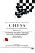 | Chess | 2003 | SV | mp4 | 480p | Helen Sjöholm, Tommy Körberg, Josefin Nilsson, Anders Ekborg, Per Myrberg, Rolf Skoglund | |
| Chess | 2009 | EN | mp4 | 480p | Josh Groban, Idina Menzel, Adam Pascal, David Bedella, Kerry Ellis, Clarke Peters, Marti Pellow, Tim Rice | ||
| Chess in Concert | 1989 | EN | mp4 | 1080p | Björn Ulvaeus, Judy Kuhn, Murray Head, Tommy Körberg, Sissel Kyrkjebø, Johan Schinkler, Anders Glenmark | ||
| Chess Pieces | 1986 | EN | mp4 | 576p | Elaine Paige, Murray Head, Tommy Körberg, Barbara Dickson, Björn Skifs | ||
| Chicago | 2002 | EN | mp4 | 720p | Catherine Zeta-Jones, Renée Zellweger, Queen Latifah, Richard Gere, Christine Baranski, Taye Diggs, Cliff Saunders, Dominic West, John C. Reilly, Colm Feore, Chita Rivera, Susan Misner, Denise Faye, Deidre Goodwin, Mýa, Ekaterina Chtchelkanova, Lucy Liu, Jonathan Whittaker, Sean McCann, Jayne Eastwood | ||
| A Chorus Line | 1985 | EN | mp4 | 720p | Michael Douglas, Alyson Reed, Audrey Landers, Janet Jones, Terrence Mann, Gregg Burge, Khandi Alexander, Vicki Frederick, Yamil Borges, Jan Gan Boyd, Matt West, Charles McGowan, Peter Fitzgerald | ||
| Cinderella | 1957 | EN | mp4 | 480p | Julie Andrews, Howard Lindsay, Ilka Chase, Kaye Ballard, Alice Ghostley, Edie Adams, John Cypher, David F. Perkins | ||
| Ciske De Rat | 2010 | NL | mp4 | 576p | Danny de Munk | ||
| Come From Away | 2021 | EN | mp4 | 1080p | Jenn Colella, Joel Hatch, Tony LePage, Caesar Samayoa, Astrid Van Wieren, Petrina Bromley, Jim Walton, Sharon Wheatley, Emily Walton, Q. Smith, De'Lon Grant, Paul Whitty | ||
 |
Compañera Evita | 2012 | EN | mp4 | 1080p | Nayla Malano | |
| Company | 1996 | EN | mp4 | SD | Adrian Lester, Rebecca Front, Clive Rowe, Clare Burt, Gareth Snook, Liza Sadovy, Teddy Kempner, Sophie Thompson, Michael Simkins, Sheila Gish, Paul Bentley, Anna Francolini, Kiran Hocking, Hannah James | ||
| Company | 2007 | EN | mp4 | 480p | Raúl Esperza, Barbara Walsh, Bruce Sabath, Heather Laws, Robert Cunningham, Kristin Huffman, Keith Butterbaugh, Leenya Rideout, Fred Rose, Amy Justman, Matt Castle, Elizabeth Stanley, Angel Desai, Kelly Jeane Grant | ||
| Company | 2011 | EN | mp4 | 480p | Neil Patrick Harris, Patti LuPone, Martha Plimpton, Anika Noni Rose, Jim Walton, Jon Cryer, Craig Bierko, Katie Finneran, Christina Hendricks, Aaron Lazar, Chryssie Whitehead, Stephen Colbert | ||
| The Cradle Will Rock | 1986 | EN | mp4 | 480p | Casey Biggs, Laura Hicks, Patti LuPone, Randle Mell, Mary Lou Rosato, David Schramm, Henry Stram | ||
 |
Cradle Will Rock | 1999 | EN | mp4 | 1080p | Hank Azaria, Rubén Blades, Joan Cusack, John Cusack, Cary Elwes, Philip Baker Hall, Cherry Jones, Angus Macfadyen, Bill Murray, Vanessa Redgrave, Susan Sarandon, Jamey Sheridan, John Turturro, Emily Watson, Bob Balaban, Jack Black, Kyle Gass, Paul Giamatti, Barnard Hughes, Barbara Sukowa, Victoria Clark, Erin Hill, Daniel H. Jenkins, Timothy Jerome, Chris McKinney, Henry Stram, Adele Robbins, Lee Arenberg, Allan F. Nicholls, Rob Carlson, Alison Tatlock, Dina Platias | |
| Curtains | 2020 | EN | mp4 | 720p | Jason Manford, Carley Stenson, Ore Oduba, Rebecca Lock, Samuel Holmes, Leah Barbara West, Alan Burkitt, Martin Callaghan, Emma Caffrey, Mark Sangster, Adam Rhys-Charles, Nia Jermin, Minal Patel, J.R. Ballantyne, Samuel John-Humphreys, Thomas-Lee Kidd, Charlie Johsnon, Kate Ivory Jordan, Gleanne Purcell Brown, Kathryn Barnes, Robin Kent | ||
| Daddy Long Legs | 2015 | EN | mp4 | SD | Megan McGinnis, Adam Halpin | ||
| 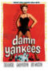 | Damn Yankees | 1958 | EN | mp4 | 1080p | Tab Hunter, Gwen Verdon, Ray Walston, Russ Brown, Shannon Bolin, Nathaniel Frey, James Komack, Rae Allen, Robert Shafer, Jean Stapleton, Bob Fosse | |
| De Eso No Canta | 2018 | ES | mp4 | 1080p | Nicolás Cucaro, Laura Gonzalez, Julián Rubino, Déborah Turza | ||
| Dear Evan Hansen | 2021 | EN | mp4 | 1080p | Ben Platt, Amy Adams, Kaitlyn Dever, Julianne Moore, Amandla Stenberg, Nik Dodani, Colton Ryan, Danny Pino, DeMarius R. Copes, Isaac Powell, Liza Kate, Avery Bederman, Gerald Caesar, Kate Chen | ||
| Death Note [Kakizawa Hayato Version] | 2015 | JA | mp4 | SD | Hayato Kakizawa, Teppei Koike, Fuuka Yuzuki, Ami Maeshima, Megumi Hamada, Koutaro Yoshida, Joji Saiga | ||
| Death Note [Kenji Urai Version] | 2015 | JA | mp4 | SD | Kenji Urai, Teppei Koike, Fuuka Yuzuki, Ami Maeshima, Megumi Hamada, Koutaro Yoshida, Joji Saiga | ||
 |
I Deici Commandamenti | 2003 | IT | mp4 | 576p | Melody Castellari, Barbara Eramo, Irene Fornaciari, Renata Fusco, Lidia Malgieri, Sergio Moschetto, Roberto Tiranti, Daniele Vit | |
| Diana: The Musical | 2021 | EN | mp4 | 1080p | Jeanna De Waal, Roe Hartrampf, Erin Davie, Judy Kaye, Zach Adkins, Tessa Alves, Ashley Andrews, Austen Danielle Bohmer, Holly Ann Butler, Stephen Carrasco, Bruce Dow, Richard Gatta, Lauren E.J Hamilton, Andre Jordan, Gareth Keegan, Nathan Lucrezio, Tómas Matos, Chris Medlin, Laura Stracko, Bethany Ann Tesarck | ||
| Les Dix Commandements | 2001 | FR | mp4 | 480p | Daniel Levi | ||
| Doctor Dolittle | 1967 | EN | mp4 | 1080p | Rex Harrison, Samantha Eggar, Anthony Newley, Richard Attenborough, Peter Bull, Muriel Landers, William Dix, Geoffrey Holder, Portia Nelson, Norma Varden, Frank Baker, Edward Cast, Judith Chapman, Phyllis Coghlan, Robert Cole, Cyril Cross, Peter Crowcroft, John Dolan, Jesslyn Fax, Arthur Gould-Porter, Eric Heath, Lars Hensen, Kendrick Huxham, Theron Jackson, Queenie Leonard, Frank Radcliffe, Jack Raine, Danny Rees, Angelo Rossitto, Rufus, Ted Stanhope, Geoffrey Steele, Gilchrist Stuart, Ginny Tyler, Bob Winters | ||
| Dorian: A Rock Musical 20121 | EN | mp4 | 1080p | Keith Ramsay, John Addison, Fia Houston-Hamilton, Robert Grose, Lewis Rae, Johanna Stanton, Sophie Jugé, Tristan Pegg | |||
| Dracula | 2007 | DE | mp4 | 576p | Thomas Borchert, Uwe Kröger, Jesper Tydén, Lyn Liechty, Caroline Vasicek, Eric Minsk, Robert D. Marx, Lucius Wolter, Rory Six | ||
| 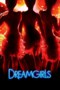 | Dreamgirls | 2007 | EN | mp4 | 1080p | Jennifer Hudson, Beyoncé Knowles, Eddie Murphy, Jamie Foxx, Danny Glover, Anika Noni Rose, Keith Robinson, Loretta Devine, Hinton Battle, Sharon Leal | |
| Dreamgirls in Concert | 2001 | EN | mp4 | 480p | Lilias White, Audra McDonald, Heather Headley, Norm Lewis, Darius de Haas, Billy Porter, Tamara Tunie, James Stovall, Brian Stokes Mitchell | ||
| 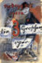 | Die Dreigroschenoper | 1931 | DE | mp4 | 576p | Lotte Lenya, Carola Neher, Ernst Busch, Rudolf Forster, Valeska Gert, Oskar Höcker, Paul Kemp, Krafft-Raschig, Gustav Püttjer, Fritz Rasp, Reinhold Schünzel | |
| Die Dreigroschenoper | 2004 | DE | mp4 | 480p | Ulrich Tukur, Stefanie Stappenbeck, Cornelia Schirmer/ Eva Mattes), Christian Redl, Angela Winkler/Sabrina Ascacibar, Peter Franke, Anneke Schwabe, Kai Maertens, Niels Hansen, Tim D. Lee, Günter Märtens, Kalle Mews, Ulrich Mayer | ||
| Elisabeth | 2005 | DE | mp4 | SD | Maya Hakvoort, Máté Kamarás, André Bauer | ||
| Elisabeth: 25th Anniversary Special Gala Concert | 2021 | JA | mp4 | 480p | Saki Asaji, Minoru Ko, Yu Emao, Asato Shizuki, Yoka Wao, Ayaka Shiraki, Wataru Kozuki, Hitomi Tsukikage, Nao Ayaki, Kei Aran, Sumire Haruno, Hikaru Asami, Yuhi Ozora, Jun Sena, Natsuki Mizu, Rei Otori, Hiromu Kiriya, Rui Shijo, Kairi Hokusho, Yuri Shirahane, Kaname Ouki, Manato Asaka, Nene Yumesaki, Nozomi Futo, Rio Asumi, Hana Ranno, Reika Manaki, Rion Misaki, Maria Kano | ||
| Elisabeth | 2022 | DE | mp4 | 720p | Maya Hakvoort, Mark Seibert, David Jacobs, André Bauer, Lukas Perman, Abla Alaoui, Daniela Ziegler, Katja Berg, Hans Nebelung | ||
| EMO the Musical | 2016 | EN | mp4 | 1080p | Benson Jack Anthony, Jordan Hare, Rahart Adams, Jon Prasida, Lucy Barrett, Ben Bennett, Craig Hyde-Smith, Geraldine Viswanathan, Kevin Clayette, Bridie Carter, Adam Zwar | ||
| 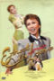 | Ernest in Love | 2005 | JA | mp4 | SD | Izumo Aya, Kasumi Fuuka, Sakura Ichika, Tsukiji Kanada, Tama Mayura, Takashou Mizuki, Tomu Ranju, Shiyou Rene, Yuuma Rin, Mochizuki Rise, Juri Sakiho, Asuka Toono, Hanagiri Wakana | |
| Ernest in Love | 2005 | JA | mp4 | 480p | Shirosaki Ai, Kanami Ayano, Izumo Aya, Shiki Erio, Kiriya Hiromu, Hihou Kokoro, Koshino Ryuu, Jun Sena, Ayazuki Seri, Asagiri Shino, Kouki Subaru, Takigawa Sueko, Otoki Sunao | ||
| Ernest in Love | 2015 | JA | mp4 | SD | Rio Asumi, Maria Kano, Toa Serika, Mirei Shiroki | ||
| Ernest Shackleton Loves Me | 2017 | EN | mp4 | 1080p | Wade McCollum, Valerie Vigoda | ||
| Everybody's Talking About Jamie | 2018 | EN | mp4 | 1080p | John McCrea, Josie Walker, Shobna Gulati, Tamsin Carroll, Phil Nichol, Lucie Shorthouse, Alex Anstey, James Gillan, Daniel Jacob, Ken Christiansen, Luke Baker, Courtney Bowman, Jordan Cunningham, Daniel Davids, Ryan Hughes, Harriet Payne, Shiv Rabheru, Lauran Rae, Kirstie Skivington | ||
| Everybody's Talking About Jamie | 2021 | EN | mp4 | 1080p | Max Harwood, Richard E. Grant, Charlotte Salt, Sharon Horgan, Ralph Ineson, Sarah Lancashire, Adeel Akhtar, John McCrea, Samuel Bottomley, Shobna Gulati, Rita May, Lauren Patel | ||
| Evita | 1996 | EN | mp4 | 720p | Madonna, Antonio Banderas, Jonathan Pryce, Jimmy Nail, Victoria Sus, Julian Littman, Olga Merediz, Laura Pallas, Julia Worsley, María Luján Hidalgo, Servando Villamil, Andrea Corr | ||
| Falsettos | 2017 | EN | mp4 | 720p | Christian Borle, Stephanie J. Block, Andrew Rannells, Brandon Uranowitz, Anthony Rosenthal, Tracie Thoms, Betsy Wolfe | ||
| Fame | 1980 | EN | mp4 | 720p | Eddie Barth, Irene Cara, Lee Curreri, Laura Dean, Antonia Franceschi, Boyd Gaines, Albert Hague, Tresa Hughes, Steve Inwood, Paul McCrane, Anne Meara, Debbie Allen, Richard Belzer | ||
| The Fantasticks | 1964 | EN | mp4 | 480p | Ricardo Montalban, Stanley Holloway, Bert Lahr | Colour (mostly) version | |
| The Fantasticks | 1995 | EN | mp4 | 720p | Joel Gray, Brad Sullivan, Jonathan Morris, Joey McIntyre, Jean Louisa Kelly, Barnard Hughes, Joseph McIntyre | ||
| Fela! | 2011 | EN | mp4 | 480p | Sahr Ngaujah | ||
| 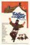 | Fiddler On The Roof | 1971 | EN | mp4 | 720p | Chaim Topol, Norma Crane, Leonard Frey, Molly Picon, Paul Mann, Rosalind Harris, Michele Marsh, Neva Small, Paul Michael Glaser, Ray Lovelock, Elaine Edwards, Candy Bonstein, Shimen Ruskin, Zvee Scooler, Louis Zorich, Alfie Scopp, Howard Goorney, Barry Dennen, Vernon Dobtcheff, Ruth Madoc, Patience Collier, Tutte Lemkow, Brian Coburn, George Little, Arnold Diamond, Marika Rivera, Mark Malicz, Aharon Ipalé, Roger Lloyd Pack, Vladimir Medar, Walter Cartier, Otto Diamant, Harry Ditson, Harry Fielder, Judith Harte, Miki Iveria, Carl Jaffe, Danny Mann, Alfred Maron, Albin Pahernik, Kenneth Waller | |
| Fiddler On The Roof | 2020 | EN | mp4 | 720p | Douwe Bijkersma, Marina Botha-Spies, Kay Dewes, Rachel Garde, Stephan Gericke, Manie Köhn, Mia Kruger, Marie McCrae, Tinus Spies, Peter Thornhill, Bedan Timm, Riana van Vollenhoven, Noelien Wilsnach | This production from South Africa is special because of the bizarre circumstances in which it was made. The Brooklyn Theatre, one of Pretoria’s gems, has, owing to the ongoing pandemic, been physically dismantled. The people who ran it so beautifully have left the building. Fiddler was the theatre’s last production: it was filmed to a seat-less auditorium. | |
| Finian's Rainbow | 1968 | EN | mp4 | SD | Fred Astaire, Petula Clark, Tommy Steele, Don Francks, Keenan Wynn | ||
 |
The First Nudie Musical | 1976 | EN | mp4 | 480p | Stephen Nathan, Cindy Williams, Bruce Kimmel, Leslie Ackerman, Alan Abelew, Diana Canova | |
| Flower Drum Song | 1961 | EN | mp4 | SD | Nancy Kwan, James Shigeta, Benson Fong, Jack Soo, Juanita Hall, Reiko Sato, Patrick Adiarte, Kam Tong, Victor Sen Yung, Soo Yong, Ching Wah Lee, James Hong, Miyoshi Umeki, B.J. Baker, George Chakiris, Joan Swift, Irene Tsu, Laurette Luez | ||
| Follies | 2017 | EN | mp4 | 1080p | Imelda Staunton, Philip Quast, Janie Dee, Peter Forbes, Tracie Bennett, Di Botcher, Dawn Hope, Josephine Barstow, Gary Raymond, Geraldine Fitzgerald, Billy Boyle, Norma Attallah, Bruce Graham | ||
| Follies In Concert | 1986 | EN | mp4 | SD | Carol Burnett, Liz Callaway, Betty Comden, Barbara Cook, Adolph Green, Andre Gregory, George Hearn, Howard McGillin, Erie Mills, Liliane Montevecchi, Phyllis Newman, Mandy Patinkin, Daisy Prince, Lee Remick, Arthur Runin, Elaine Stritch, Jim Walton, Licia Albanese, Roy Scheider, Thomas Z. Shepard | ||
| Frankenstein | 2010 | EN | mp4 | 480p | Shuler Hensley, Ivan Rutherford, Rita Harvey, J.C. Hoyt | ||
| 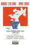 | Funny Girl | 1968 | EN | mp4 | 720p | Barbra Streisand, Omar Sharif, Kay Medford, Anne Francis, Walter Pidgeon, Lee Allen, Mae Questel, Gerald Mohr, Frank Faylen, Alena Johnston, Thordis Brandt | |
| Funny Girl | 2018 | EN | mp4 | 720p | Sheridan Smith, Darius Campbell, Rachel Izen, Joshua Lay, Nigel Barber, Martin Callaghan, Jennifer Harding, Myra Sands, Zoe Ann Brown, Abigayle Honeywill, Lloyd Davies, Peter Nash, Alexandra Waite-Roberts, Bronte Lavine, Sam Wingfield, Gillian Parkhouse, Flora Dawson, Tom Partridge, Rhianne Alleyn, Kit Benjamin, Joseph Dockree, David McIntosh, Nova Skipp | ||
| Funny Lady | 1975 | EN | mp4 | 720p | Barbra Streisand, James Caan, Omar Sharif, Roddy McDowall, Ben Vereen, Carole Wells, Colleen Camp | ||
| A Funny Thing Happened On The Way To The Forum | 1966 | EN | mp4 | 1080p | Zero Mostel, Phil Silvers, Buster Keaton, Michael Crawford, Jack Gilford, Annette Andre, Michael Hordern, Leon Greene, Roy Kinnear, Alfie Bass, John Bluthal, Pamela Brown, Patricia Jessel, Beatrix Lehmann, Jon Pertwee, Helen Funai | ||
| Gentlemen Prefer Blondes | 1953 | EN | mp4 | 1080p | Jane Russell, Marilyn Monroe, Charles Coburn, Elliott Reid, Tommy Noonan, George Winslow, Marcel Dalio, Taylor Holmes, Norma Varden, Howard Wendell, Steven Geray, Henri Letondal, Bess Flowers, Noel Neill | ||
| 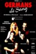 | Germans De Sang | 1996 | CA | mp4 | 576p | Angels Gonyalons, Joan Crosas Helena Munné, Sergi Zamora, Roger Pera, Gemma Brió, Jaume Mallofré, Jordi Fusalba | |
| Gigi | 1958 | EN | mp4 | 720p | Leslie Caron, Maurice Chevalier, Louis Jourdan, Hermione Gingold, Eva Gabor, Jacques Bergerac, Isabel Jeans, John Abbott, Corinne Marchand, Pat Sheehan, Marie-Hélène Arnaud | ||
| Godspell | 1973 | EN | mp4 | 720p | Victor Garber, David Haskell, Katie Hanley, Merrell Jackson, Joanne Jonas, Robin Lamont, Gilmer McCormick, Jeffrey Mylett, Jerry Sroka, Lynne Thigpen | ||
 |
Godspell: 50th Anniversary Concert | 2020 | EN | mp4 | 1080p | Ruthie Henshall, Darren Day, Jenna Russell, Ria Jones, Jenny FItzpatrick, Danyl Johnson, John Barr, Sam Tutty, Alison Jiear, Jodie Steele, Natalie Green, Lucy Williamson, Jerome Bell-Bastien, Shekinah McFarlane, Ronald Brian, Matt Croke | |
| Der Graf Von Monte Christo | 2008 | DE | mp4 | 1080p | Thomas Borchert, Sophie Berner, Carsten Lepper, Christoph Goetten, Karim Khawatmi, Peter Kock, Daniel Berini, André Bauer, Barbara Obermeier | AI upscaled | |
| Grease | 1978 | EN | mp4 | 1080p | John Travolta, Olivia Newton-John, Stockard Channing, Jeff Conaway, Didi Conn, Barry Pearl, Michael Tucci, Kelly Ward, Jamie Donnelly, Dinah Manoff, Eve Arden, Edd Byrnes, Sid Caesar, Dody Goodman, Susan Buckner, Ellen Travolta, Annette Charles, Dennis Stewart, Joan Blondell, Eddie Deezen, Fannie Flagg, Lorenzo Lamas, Frankie Avalon | ||
| Grease 2 | 1982 | EN | mp4 | 720p | Maxwell Caulfield, Michelle Pfeiffer, Lorna Luft, Maureen Teefy, Pamela Adlon, Alison Price, Matt Lattanzi, Adrian Zmed, Peter Frechette, Christopher McDonald, Leif Green, Didi Conn, Eve Arden, Sid Caesar, Dody Goodman, Tab Hunter, Connie Stevens, Eddie Deezen, Lucinda Dickey | ||
 |
Grease Live | 2016 | EN | mp4 | 1080p | Julianne Hough, Aaron Tveit, Vanessa Hudgens, Carlos PenaVega, Keke Palmer, Carly Rae Jepsen, Kether Donohue, Jordan Fisher, Andrew Call, David Del Rio, Elle McLemore, Noah Robbins, Yvette Gonzalez-Nacer, Mario López, Ana Gasteyer, Eve Plumb, Boys II Men, Didi Conn, Barry Pearl, Wendell Pierce, Joe Jonas, Sam Clark, Jon Robert Hall, Jessie J, Robert Michael Anderson, Justin Sorvillo, Chloe Ray Warmoth, Skyler Wright, Bellamy Saville, Marc Hawes, Samuel Marcus, Kayla Parker, Harley Jay, George Todd McLachlan, Chris Silcox, Stephanie Walters, Jenna Osterlund, Anthony Rogers, Kc Monnie, Hal Dion, Marley Ficalora, Heather Ann Gottlieb, Scarlet Sheppard | |
| The Greatest Showman | 2018 | EN | mp4 | 1080p | Hugh Jackman, Michelle Williams, Zac Efron, Zendaya, Rebecca Ferguson, Keala Settle, Yahya Abdul-Mateen II, Paul Sparks, Sam Humphrey, Austyn Johnson, Cameron Seely, Eric Anderson, Ellis Rubin, Skylar Dunn, Fredric Lehne, Kathryn Meisle, Daniel Everidge, Radu Spinghel, Yusaku Komori, Danial Son, Will Swenson, Linda Marie Larson, Byron Jennings, Betsy Aidem, Damian Young, Tina Benko, Gayle Rankin, Arnie Burton, Natasha Liu Bordizzo, Luciano Acuna Jr., Shannon Holtzapffel, Nick Jantz, Jonathan Redavid, Timothy Hughes, Jeremy Hudson, Taylor James, Chelsea Caso, Caoife Coleman, Mishay Petronelli, Loren Allred, Ziv Zaifman, Marko Caka, Isaac Eshete, Carly Adams | ||
| Guys And Dolls | 1955 | EN | mp4 | 1080p | Marlon Brando, Jean Simmons, Frank Sinatra, Vivian Blaine, Robert Keith, Stubby Kaye, B.S. Pully, Johnny Silver, Sheldon Leonard, Regis Toomey, Danny Dayton, George E. Stone, Kathryn Givney, Veda Ann Borg, Mary Alan Hokanson, Pat Sheehan, Bess Flowers | ||
 |
Gypsy | 1962 | EN | mp4 | 720p | Natalie Wood, Rosalind Russell, Karl Malden, Parley Baer, Morgan Brittany, Ann Jillian, Harry Shannon, Faith Dane, Betty Bruce, Paul Wallace, Roxanne Arlen, Jean Willes, Diane Pace, Ben Lessey, Jack Benny, Harvey Korman, Danny Lockin, Lois Roberts, Beulah Quo, Guy Raymond | |
| Gypsy | 1993 | EN | mp4 | 576p | Bette Midler, Peter Riegert, Cynthia Gibb, Ed Asner, Christine Ebersole, Michael Jeter, Andrea Martin, Linda Hart, Anna McNeely, Jennifer Rae Beck, Jeffrey Broadhurst, Tony Shalhoub, Rachel Sweet, Lacey Chabert | ||
| Gypsy | 2015 | EN | mp4 | 1080p | Imelda Staunton, Peter Davison, Lara Pulver, Louise Gold, Anita Louise Combe, Dan Burton, Julie Legrand | ||
| The Ha'penny Bridge | 2007 | EN | mp4 | SD | Stephen Ashfield, Annalene Beechey, John Conroy, Claudine Day, Flo McSweeney, Daniel Reardon, Eileen Reid | ||
| Hair | 1979 | EN | mp4 | 1080p | John Savage, Treat Williams, Annie Golden, Beverly D'Angelo, Dorsey Wright, Don Dacus, Richard Bright, Nicholas Ray, Charlotte Rae, Miles Chapin, Michael Jeter, Ren Woods, Nell Carter | ||
| Hairspray | 2007 | EN | mp4 | 1080p | John Travolta, Michelle Pfeiffer, Christopher Walken, Amanda Bynes, James Marsden, Queen Latifah, Brittany Snow, Zac Efron, Elijah Kelley, Allison Janney, Nikki Blonsky, Taylor Parks, Jayne Eastwood, Paul Dooley, Jerry Stiller, Darren Frost, John Waters, Joe Parro, Nick Loren, Bryan Hindle, Sheldon Smith, Greg Farkas, Bruce McFee, Christian Hagen, John Andersen, Neil Crone, George King, James Kirchner, Brendan Wall, Ted Ludzik, Ron Pardo, Geri Hall, Seth Howard, Ricki Lake, Adam Shankman, Marc Shaiman, Scott Wittman, Anne Fletcher, Joey Pizzi | ||
| Hairspray Live | 2016 | EN | mp4 | 720p | Maddie Baillio, Dove Cameron, Harvey Fierstein, Kristin Chenoweth, Garrett Clayton, Ariana Grande, Jennifer Hudson, Derek Hough, Martin Short, Andrea Martin, Sean Hayes, Rosie O'Donnell, Billy Eichner, Paul Vogt, Mason Trueblood, Ephraim Sykes, Ricki Lake, Marissa Jaret Winokur, Marissa Heart, David Dustin Kenyon, Roger Groh, Shahadi Wright, A.J. Danna, Re'Sean Pates | ||
| Hamilton | 2020 | EN | mp4 | 1080p | Lin-Manuel Miranda, Leslie Odom Jr., Renée Elise Goldsberry, Phillipa Soo, Daveed Diggs, Christopher Jackson, Jasmine Cephas Jones, Okieriete Onaodowan, Anthony Ramos, Jonathan Groff, Carleigh Bettiol, Ariana DeBose, Hope Easterbrook, Sydney James Harcourt, Sasha Hutchings, Thayne Jasperson, Elizabeth Judd, Jon Rua, Austin Smith, Seth Stewart, Ephraim Sykes | ||
 |
Hans Christian Andersen | 1952 | EN | mp4 | 1080p | Danny Kaye, Farley Granger, Zizi Jeanmaire, Joseph Walsh, Philip Tonge, John Qualen, Erik Bruhn, Roland Petit, John Brown, Jeanne Lafayette, Robert Malcolm, George Chandler, Fred Kelsey, Lee Aaker, Billy Bevan, Barrie Chase, Sylvia Lewis | |
| A Hard Day's Night | 1964 | EN | mp4 | 720p | John Lennon, Paul McCartney, George Harrison, Ringo Starr, Wilfrid Brambell, Norman Rossington, John Junkin, Victor Spinetti, Anna Quayle, Deryck Guyler, Isla Blair, Pattie Boyd, Richard Vernon, Edward Malin | ||
| 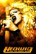 | Hedwig and the Angry Inch | 2001 | EN | mp4 | 720p | John Cameron Mitchell, Michael Aronov, Andrea Martin, Miriam Shor, Stephen Trask, Theodore Liscinski, Rob Campbell, Michael Pitt, Maurice Dean Wint | |
| 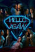 | Hello Again | 2017 | EN | mp4 | 1080p | Audra McDonald, Martha Plimpton, T.R. Knight, Rumer Willis, Jenna Ushkowitz, Nolan Gerard Funk, Sam Underwood, Tyler Blackburn, Al Calderon, Cheyenne Jackson, Ramón Olmos Torres | |
| Hello Dolly! | 1969 | EN | mp4 | 720p | Barbra Streisand, Walter Matthau, Michael Crawford, Louis Armstrong, Marianne McAndrew, Danny Lockin, E.J. Peaker, Joyce Ames, Tommy Tune, David Hurst, Fritz Feld, J. Pat O'Malley, Sanita Pelkey | ||
| Help! | 1965 | EN | mp4 | 720p | George Harrison, John Lennon, Paul McCartney, Ringo Starr, Leo McKern, Eleanor Bron, Victor Spinetti, Roy Kinnear, John Bluthal, Patrick Cargill, Warren Mitchell, Alfie Bass | ||
| El Hombre De La Mancha | 2017 | ES | mp4 | 720p | Benny Ibarra Jr., Ana Brenda Contreras, Carlos Corona, Alberto Lomnitz, Constantino Echevarría, Beto Torres, María Penella, Enrique Chi, Denise de Ramery | ||
| L'Homme de La Mancha | 1998 | FR | mp4 | SD | José van Dam, Alexise Yerna, Georges Gautier, Serge Swysen, Olivier Grand, Patrick Vilet, Jacques Duparc, Anne-Catherine Gillet, Philippe Ermelier, Christine Solhouse, Leonard Graus, Guy Cabelle, Antoine Garcin, Maurice Xiberras, Antoine Normand, Lillo Farrauto, Eric Medol | ||
| How To Succeed In Business Without Really Trying | 1967 | EN | mp4 | 576p | Robert Morse, Michele Lee, Rudy Vallee, Maureen Arthur, Sammy Smith, Scooter Teague, Carol Worthington, Murray Matheson, Ruth Kobart, Kay Reynolds, John Myhers, Jeff DeBenning, Robert Q. Lewis, Paul Hartman, George Fenneman, Anne Seymour | ||
| I am from Austria | 2017 | EN | mp4 | 720p | Iréna Flury, Lukas Perman, Elisabeth Engstler, Andreas Steppan, Dolores Schmidinger, Matthias Trattner, Karim Ben Mansur, Martin Berger, Martin Bermoser | ||
| I Do! I Do! | 1983 | EN | mp4 | 720p | Lee Remick, Hal Linden | ||
| I Love You, You’re Perfect, Now Change | 2021 | EN | mp4 | 1080p | Simon Lipkin, Brenda Edwards, Alice Fearn, Oliver Tompsett | ||
| Ich war noch niemals in New York | 2019 | DE | mp4 | 720p | Heike Makatsch, Moritz Bleibtreu, Katharina Thalbach, Uwe Ochsenknecht, Michael Ostrowski, Pasquale Aleardi, Marlon Schramm, Mat Schuh, Andreja Schneider, Stefan Kurt, Cornelius Obonya, Judith Neumann, Philipp Hochmair, Shadi Hedayati, Frank Zander, Atta Yaqub, Michael Aston, Alexander Dydyna, Isabel Trimborn, Annette Mayer, Siegrid Bongarz, Petra Blossey, Conny Buch, Helga Bellinghausen, Nina Gummich, Katja Sallay, Franziska Weisz, Kathleen Renish, Nino Porzio, Nikita Vasilchenko, Dennis Vehlen | ||
| In the Heights | 2021 | EN | mp4 | 1080p | Anthony Ramos, Corey Hawkins, Leslie Grace, Melissa Barrera, Olga Merediz, Daphne Rubin-Vega, Gregory Diaz IV, Marc Anthony, Jimmy Smits, Stephanie Beatriz, Dascha Polanco, Noah Catala, Lin-Manuel Miranda, Mateo Gómez, Patrick Page, Olivia Perez, Analia Gomez, Dean Scott Vazquez, Mason Vazquez, Delila Ramos, Valentina, Christopher Jackson, Susan Pourfar, María Hinojosa, Ryan Woodle, Doreen Montalvo, Ilia Jessica Castro, Yesy Garcia, Jonathan Arana, Jennifer Hernandez, Amp Ngernrungruangroj, Bairam Rizai, Lavinia Jones Wright, Alexandra Campos, Rhapsody James, Ariana S. Gomez, Ariana Greenblatt, Hugh M Jones III | ||
| Into the Woods | 1987 | EN | mp4 | 480p | Bernadette Peters, Chip Zien, Joanna Gleason, Tom Aldredge, Kim Crosby | ||
| Into The Woods | 2011 | EN | mp4 | 480p | Marc Antolin, Valda Aviks, Ethan Beer, Billy Boyle, Jenna Russell, Gaye Brown, Sophie Caton, Marilyn Cutts, Alice Fearn, Helen Dalimore, Judi Dench, Mark Goldthorp, Amy Griffiths, Mark Hadfield, Eddie Manning, Amy Ellen Richardson, Beverly Rudd | ||
| Into The Woods | 2014 | EN | mp4 | 1080p | Meryl Streep, Emily Blunt, James Corden, Anna Kendrick, Chris Pine, Tracey Ullman, Christine Baranski, Johnny Depp, Lilla Crawford, Daniel Huttlestone, Billy Magnussen, MacKenzie Mauzy, Tammy Blanchard, Lucy Punch, Frances de la Tour, Simon Russell Beale, Joanna Riding, Annette Crosbie, Richard Glover | ||
| Jacques Brel Is Alive And Well And Living In Paris | 1975 | EN | mp4 | SD | Jacques Brel | ||
| The Jazz Singer | 1980 | EN | mp4 | 1080p | Neil Diamond, Laurence Olivier, Lucie Arnaz, Catlin Adams, Franklyn Ajaye, Paul Nicholas, Sully Boyar, Mike Kellin, James Booth, Luther Waters, Oren Waters, Rod Gist, Walter Janovitz, Janet Brandt, John Witherspoon, Dale Robinette, David Coburn, Judy Gibson, Hank Garrett, Ernie Hudson, James Karen, Edward Jahnke, Tim Herbert, Hugh Gillin, Jill Jaress, Victor Paul, Uri Frenkel, Rex Cutter, Michael Pasternak, Sandy Helberg, Brion James, Douglas Nigh, Patrick Stansfield, Seymour Cassel, Steve Dash, Billie Perkins, Lev Liberman | ||
 |
Jekyll & Hyde: The Musical | 2001 | EN | mp4 | 1080p | David Hasselhoff, Coleen Sexton, Andrea Rivette, George Merritt, Barrie Ingham, Martin Van Treuren, Corinne Melançon, Juan Betancur, David Chaney, Sheri Cowart, Bill E. Dietrich, John Treacy Egan, Robert Jensen, Peter Johl, Stuart Marland, Brandi Chavonne Massey, Frank Mastrone, Kelli O'Hara, Joel Robertson, John Schiappa, Bonnie Schon, Sally Ann Tumas, Russell B. Warfield | |
| Jerry Springer The Opera | 2005 | EN | mp4 | SD | David Bedella, David Soul, Leon Craig, Carrie Ellis, Alison Jiear | ||
| Jersey Boys | 2014 | EN | mp4 | 720p | Christopher Walken, Vincent Piazza, Freya Tingley, James Madio, Sean Whalen, Kathrine Narducci, Francesca Eastwood, Mike Doyle, Steve Schirripa, Barry Livingston, Alexis Krause, Jeremy Luke, Silvia Kal, John Lloyd Young, Erich Bergen, Michael Lomenda, Johnny Cannizzaro, Joseph Russo, Billy Gardell, John Griffin, Elizabeth Hunter, Lacey Hannan, Renée Marino, Erica Piccininni, Steve Monroe, Rob Marnell, Troy Grant, Grant Roberts, Kara Pacitto, Michael Patrick McGill, Nancy La Scala, Clint Ward, Jackie Seiden, Matt Nolan, Meagan Holder, Joe Abraham, Phil Abrams, Joe Howard, Katelyn Pacitto, Ben Rauch, Bill Watterson, Annika Noelle, Derek Easley, Kim Gatewood, Alexandra Ruddy, Keith Loneker, Marco Tazioli, David Newton, Donnie Kehr, Scott Vance, Kyli Rae, Travis Nicholson, Allison Wilhelm, Tye Edwards, Jon Paul Burkhart, Lou Volpe, David Crane, Lou George, Michael Butler Murray, Michael Lanahan, Aria Pullman, Jacqueline Mazarella, Danielle Souza, Miles Aubrey, Johnny Dinu, Maggie Beal, Jeff DePaoli, Vincent Selhorst-Jones, Angel Murphy, Grace Kelley | ||
| Jesus Christ Superstar | 2019 | EN | mp4 | 1080p | John Legend, Sara Bareilles, Alice Cooper, Brandon Victor Dixon, Jason Tam, Ben Daniels, Norm Lewis, Erik Grönwall | ||
| Jesus Christ Superstar | 1973 | EN | mp4 | 1080p | Ted Neeley, Carl Anderson, Yvonne Elliman, Barry Dennen, Bob Bingham, Larry Marshall, Josh Mostel, Kurt Yaghjian, Paul Thomas, Pi Douglass, Robert LuPone, Jonathan Wynne, Thommie Walsh, Richard Molinare, David Devir, Jeff Hyslop, Richard Orbach, Shooki Wagner, Darcel Wynne, Marcia McBroom, Sally Neal, Leeyan Granger, Vera Biloshisky, Kate Wright, Wendy Maltby, Denise Pence, Baayork Lee, Wyetta Turner, Susie Allanson, Tamar Zafria, Ellen Hoffman, Riki Oren, Judith Daby, Lea Kestin, Adaya Pilo, Zvulun Cohen, Amity Razi, Meir Israel, Avi Ben-Haim, Itzhak Sidranski, Haim Bashi, David Rejwan, David Duack, Steve Boockvor, Cliff Michaelevski, Peter Luria, Tom Guest, David Barkan, Stephen Denenberg, Danny Basevitch, Didi Liekov, Doron Gaash, Zvi Lehat, Noam Cohen, Moshe Uziel | ||
| Jesus Christ Superstar | 1992 | EN | mp4 | 480p | John Farnham, Kate Ceberano, Jon Stevens, John Waters, Angry Anderson, David Gould, Dean Lotherington, Russell Morris, Justin Smith | ||
| Jesus Christ Superstar | 2000 | EN | mp4 | 720p | Glenn Carter, Jerome Pradon, Renee Castle, Rik Mayall | ||
| Jesus Christ Superstar | 2004 | CS | mp4 | 576p | Kamil Střihavka, Dan Bárta, Renáta Podlipská, Athina Langoská, Bohouš Josef, Aleš Brichta, Jiří Schoenbauer, 4TET, Dara Rolins | ||
| 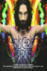 | Jesus Christ Superstar | 2014 | SV | mp4 | 720p | Ola Salo, Patrik Martinsson, Åsa Fång, Fred Johanson, Lars Humble, Bengt Krantz, Glenn Daniel Nilsson | |
| Jesus Christ Superstar the Arena Tour | 2012 | EN | mp4 | 1080p | Tim Minchin, Ben Forster, Chris Moyles, Melanie Chisholm | ||
| Joe De Musical | 1997 | NL | mp4 | 480p | Stanley Burleson, Vera Mann, Simone Kleinsma, Mathilde Santing, Frans Limburg, Rolf Koster, Wil Van Der Meer | ||
| Jonah: The Musical | 2017 | EN | mp4 | 1080p | |||
| 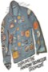 | Joseph and the Amazing Technicolor Dreamcoat | 1973 | EN | mp4 | 480p | Gary Bond, Paul Brooke, Ian Charleson, Barbara Courtney, Digby | |
| 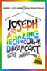 | Joseph And The Amazing Technicolor Dreamcoat | 1999 | EN | mp4 | 1080p | Donny Osmond, Maria Friedman, Richard Attenborough, Joan Collins, Ian McNeice, Robert Torti, Christopher Biggins, Alex Jennings, Nicholas Colicos, Jeff Blumenkrantz, David J. Higgins, Patrick Clancey, Shaun Henson, Martin Callaghan, Sebastien Torkia, Michael Small, Peter Challis, Nick Holmes, Gerry McIntyre | |
| Kean | 2007 | JA | mp4 | 480p | Mari Minami, Yuu Todoroki, Reon Yuzuki | ||
| The King And I | 1956 | EN | mp4 | 720p | Deborah Kerr, Yul Brynner, Rita Moreno, Martin Benson, Terry Saunders, Rex Thompson, Carlos Rivas, Patrick Adiarte, Alan Mowbray, Geoffrey Toone, Charles Irwin | ||
| The King and I | 2018 | EN | mp4 | 720p | Kelli O'Hara, Ken Watanabe, Ruthie Ann Miles, Dean John-Wilson, Na-Yeong Jeon, Takao Osawa | ||
| Kinky Boots: The Musical | 2019 | EN | mp4 | 1080p | Killian Donnelly, Matt Henry, Natalie McQueen, Sean Needham, Cordelia Farnworth, Antony Reed, Anna Stolli, Jonathan Carlton, Jordan Fox, Rosie Glossop, Robert Grose, Graham Kent, Emma Odell, Abbey Addams, David Haydn, Keith Higham, Hannah Price, Tom Scanlon, Olivia Winterfold, Jak Allen-Anderson, Jed Berry, Louis Clarke-Clare, Daniel Downing, Jemal Felix, Jon Reynolds, Charlie Underhill, Temba Mliswa | ||
| Kipps: The New Half a Sixpence Musical | 2017 | EN | mp4 | 720p | Charlie Stemp, Devon-Elise Johnson, Ian Bartholomew, Emma Williams, Bethany Huckle, Sam O'Rourke, Alex Hope, Callum Train, Vivien Parry, Jane How, Gerard Carey, David Birch, Kimberly Blake, David Burrows, Nick Butcher, Jon Conroy, Matthew Dale, Jaye Julliet Elster, Tim Hodges, Samantha Hull, Rebecca Jayne Davies, Jennifer Louise Jones, Philip Marriott, Harry Morrison, Lauren Varnham, Annie Wensak | ||
| Kismet | 1967 | EN | mp4 | 480p | José Ferrer, Anna Maria Alberghetti, George Chakiris, Barbara Eden, Hans Conried, Cecil Kellaway, Joe Negri, Larry Billman, Robert Goulet | ||
| Kismet | 2012 | EN | mp4 | 1080p | Howard Keel, Ann Blyth, Dolores Gray, Vic Damone, Monty Woolley, Sebastian Cabot, Jay C. Flippen, Mike Mazurki, Jack Elam, Ted de Corsia, Pat Sheehan, June Kirby, Reiko Sato, Wonci Lui, Patricia Dunn | ||
| Kiss Me Kate | 1953 | EN | mp4 | 720p | Kathryn Grayson, Howard Keel, Ann Miller, Keenan Wynn, Bobby Van, Tommy Rall, James Whitmore, Kurt Kasznar, Bob Fosse, Ron Randell, Willard Parker | ||
| Kiss Me Kate | 1958 | EN | mp4 | 480p | Alfred Drake, Patricia Morison, Julie Wilson, Bill Hayes, Jack Klugman, Harvey Lembeck, Paul McGrath | ||
| Kiss Me, Kate | 1963 | EN | mp4 | 480p | Howard Keel, Patricia Morison, Millicent Martin, Eric Barker, Reginald Beckwith, Tony Adams, Irving Davies, Fred Evans, Danny Green, Janet Hall, David Healy, Nita Howard, Ian Kaye, Monte Landis, Isabelle Lucas, Connel Miles, Bill Owen, Joan Palethorpe, Peter Regan | ||
| Kiss Me Kate at the Proms | 2014 | EN | mp4 | SD | Ben Davis, Alexandra Silber, Tony Yazbeck, Louise Dearman | ||
| Kuifje De Zonnetempel | 2001 | NL | mp4 | SD | Tom Van Landuyt, Henk Poort, Frans Van den Aa, Chris van den Durpel, Guido Naessens, Jacqueline van Quaille, Chris De Moor, Ernst van Looy | ||
| La La Land | 2016 | EN | mp4 | 1080p | Ryan Gosling, Emma Stone, John Legend, Rosemarie DeWitt, J.K. Simmons, Finn Wittrock, Callie Hernandez, Jessica Rothe, Sonoya Mizuno, Tom Everett Scott, Damon Gupton, Jason Fuchs, Josh Pence, Nicole Coulon, Hemky Madera, Zoë Hall, Dempsey Pappion, Trevor Lissauer, Anna Chazelle, Sandra Rosko, Kiff VandenHeuvel, Thom Shelton, Terry Walters, Cinda Adams, Meagen Fay, Claudine Claudio, Olivia Hamilton, John Hindman, Amiée Conn, Valarie Rae Miller, Nicole Wolf, Miles Anderson, Bobo Chang, Marius De Vries, D.A. Wallach, Briana Lee, Reshma Gajjar, Candice Coke, Hunter Hamilton, Damian Gomez, Amanda Balen, Cindera Che, Chris Moss, Marissa Labog, Tiffany Daniels, Melinda Sullivan, Britt Stewart, Clarice Ordaz, Nathan Prevost, Scott Hislop, Kc Monnie, Krystal Ellsworth, Sarah Mitchell | ||
| Lady Day At Emerson's Bar And Grill | 2016 | EN | mp4 | 480p | Audra McDonald, David Michael Cefalu, Katie Lynn Cotaya | ||
| 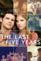 | Last Five Years, The | 2012 | EN | mp4 | SD | Anna Kendrick, Jeremy Jordan, Natalie Knepp, Bettina Bresnan, Marceline Hugot, Rafael Sardina, Allison Macri, Alan Simpson, Nic Novicki, Tamara Mintz, Cassandra Inman, Meg Hudson, Laura Harrier, Cat Lynch, Kate Meltzer, Emma Meltzer, Charly Bivona, Alex Stebbins, Lily LaGravenese, Betina Joly, Upa Inspace, Lisa Herring, Nina Ordman, Wade Dooley, Ashley Spencer, Danielle Kaye | |
| Legally Blonde: The Musical | 2007 | EN | mp4 | 1080p | Laura Bell Bundy, Christian Borle, Orfeh, Richard H. Blake, Kate Shindle, Nikki Snelson, Michael Rupert, Annaleigh Ashford, Asmeret Ghebremichael, Tracy Jai Edwards, Natalie Joy Johnson, Andy Karl, Manuel Herrera, Beth Curry, Amber Efé, Gaelen Gilliland, Jason Gillman, Nick Kenkel, Michelle Kittrell, Kevin Pariseau, Matthew Risch, Noah Weisberg, Kate Wetherhead, Nathan Balser, April Berry, Paul Canaan, Becky Gulsvig | ||
| Les Misérables | 2012 | EN | mp4 | 1080p | Hugh Jackman, Russell Crowe, Anne Hathaway, Amanda Seyfried, Sacha Baron Cohen, Helena Bonham Carter, Eddie Redmayne, Aaron Tveit, Samantha Barks, Daniel Huttlestone, Cavin Cornwall, Josef Altin, David Hawley, Adam Jones, John Barr, Tony Rohr, Richard Dixon, Andy Beckwith, Colm Wilkinson, Stephen Bent, Georgie Glen, Heather Chasen, Paul Thornley, Paul Howell, Stephen Tate, Michael Jibson, Kate Fleetwood, Hannah Waddingham, Clare Foster, Kirsty Hoiles, Jenna Boyd, Alice Fearn, Alison Tennant, Marilyn Cutts, Cathy Breeze, John Albasiny, Bertie Carvel, Tim Downie, Andrew Havill, Dick Ward, Nicola Sloane, Daniel Evans, David Stoller, Ross McCormack, Jaygann Ayeh, Adrian Scarborough, Frances Ruffelle, Lynne Wilmot, Charlotte Spencer, Julia Worsley, Keith Dunphy, Ashley Artus, John Surman, David Cann, James Simmons, Polly Kemp, Ian Pirie, Adam Pearce, Julian Bleach, Marc Pickering | ||
| Les Misérables 10th Anniversary Concert | 1995 | EN | mp4 | 576p | Colm Wilkinson, Michael Ball, Michael Maguire, Ruthie Henshall, Philip Quast, Alun Armstrong, Judy Kuhn, Lea Salonga | ||
| Les Misérables: 25th Anniversary Concert | 2010 | EN | mp4 | 720p | Alfie Boe, Norm Lewis, Matt Lucas, Jenny Galloway, Lea Salonga, Samantha Barks, Katie Hall, Ramin Karimloo, Earl Carpenter, Hadley Fraser, Nick Jonas | ||
| Les Misérables: The Staged Concert | 2019 | EN | mp4 | 1080p | Alfie Boe, Michael Ball, Carrie Hope Fletcher, Matt Lucas, Rob Houchen, Bradley Jaden, Katy Secombe, Shan Ako, Lily Kerhoas, Rosanna Bates, Adam Bayjou, Ciaran Bowling, Simon Bowman, Oliver Brenin, Earl Carpenter, Vinny Coyle, Samantha Dorsey, Tamsin Dowsett, Nicola Espallardo, Celia Graham, Barnaby Hughes, Holly-Anne Hull, Oliver Jackson, Christopher Jacobsen, Gavin James, Will Jennings, Ciaran Joyce, Katie Kerr, Sarah Lark, Joanna Loxton, Craig Mather, Stephen Matthews, James Nicholson, Rosa O'Reilly, Claire Parrish, Sophie Reeves, Grainne Renihan, Leo Roberts, Raymond Walsh, Gemma Wardle, Andrew Yorke | ||
| The Light in the Piazza | 2006 | EN | mp4 | 1080p | Victoria Clark, Aaron Lazar, Chris Sarandon, Katie Rose Clarke, Michael Berresse, Beverly Sills | ||
| Linie 1 | 1988 | DE | mp4 | 1080 | Inka Victoria Groetschel, Dieter Landuris, Rainer Strecker, Claus-Peter Damitz, Christian Veit, Dietrich Lehmann, Eva Ebner, Ilona Schulz, Hansi Jochmann, Petra Zieser, Hark Bohm, Else Nabu, Christiane Reiff, Thomas Ahrens, Dieter Hildebrandt | ||
| A Little Night Music | 1977 | EN | mp4 | SD | Elizabeth Taylor, Diana Rigg, Len Cariou, Lesley-Anne Down, Hermione Gingold, Laurence Guittard, Christopher Guard, Lesley Dunlop, Chloe Franks, Heinz Marecek, Dagmar Koller, Ruth Brinkman, Jonathan Tunick, Hubert Tscheppe, Jean Sincere, Stephan Paryla-Raky | ||
| A Little Night Music | 1990 | EN | mp4 | SD | Sally Ann Howes, George Lee Andrews, Regina Resnik | ||
| The Little Prince | 1974 | EN | mp4 | 1080p | Richard Kiley, Steven Warner, Bob Fosse, Gene Wilder, Donna McKechnie, Joss Ackland, Clive Revill, Victor Spinetti, Graham Crowden | ||
| Little Shop Of Horrors | 1986 | EN | mp4 | 1080p | Rick Moranis, Ellen Greene, Vincent Gardenia, Steve Martin, Tisha Campbell-Martin, John Candy, Bill Murray, Tichina Arnold, Miriam Margolyes, Jim Belushi, Christopher Guest, Danny John-Jules, Mak Wilson, Barbara Rosenblat, Kevin Scott, Vincent Wong, Levi Stubbs | ||
| Little Shop Of Horrors | 1987 | EN | mp4 | 480p | Bert Hilkes, Marsha Waterbury, Tyrone Aiken, Jonas Cole, Angel Jemmott, David Jordan, David Kaiserman, Sharon Lorraine-Young, Natalie Oliver | ||
| Lost Horizon | 1973 | EN | mp4 | 1080p | Peter Finch, Liv Ullmann, Sally Kellerman, George Kennedy, Michael York, Olivia Hussey, Bobby Van, James Shigeta, Charles Boyer, John Gielgud, Kent Smith, John van Dreelen, Larry Duran, Miiko Taka, Tybee Brascia, Neil Jon, Hedley Mattingly, Virginia Ann Lee, Paul Delucca | ||
| 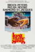 | Lost In The Stars | 1974 | EN | mp4 | 480p | Brock Peters, Raymond St. Jacques, Melba Moore, Clifton Davis | |
| Love Never Dies | 2012 | EN | mp4 | 1080p | Ben Lewis, Anna O'Byrne, Maria Mercedes, Simon Gleeson, Sharon Millerchip, Jack Lyall, Emma J Hawkins, Paul Tabone, Dean Vince | ||
| Lucky Stiff | 2014 | EN | mp4 | 720p | Dominic Marsh, Nikki M. James, Pamela Shaw, Jason Alexander, Dennis Farina, Don Amendolia, Kate Shindle, Mary Birdsong, Anthony Skordi, Jayne Houdyshell, Maggie Carney, Kent Avenido, Herschel Sparber, Steve West, Mary Jo Catlett | ||
 |
Ludwig 2 | 2005 | DE | mp4 | 480p | Jan Ammann, Nils-Holger Bock, Janet Chvatal, Matthias Eschli, Bruno Grassini, Marc Gremm, Norbert Lamla, Suzan Zeichner | |
| Mack The Knife | 1989 | EN | mp4 | 480p | Richard Harris, Raúl Juliá, Roger Daltrey, Mark Northover, Julia Migenes, Julie Walters, Bill Nighy | ||
| Maltby & Shire's Closer Than Ever | 1989 | EN | mp4 | 1080p | Kerry Ellis, Dalton Harris, Lee Mead, Grace Mouat | ||
| Mame | 1974 | EN | mp4 | SD | Lucille Ball, Bea Arthur, Robert Preston, Bruce Davison, Kirby Furlong, Jane Connell, Joyce Van Patten, Doria Cook-Nelson, Don Porter, Audrey Christie, John McGiver | ||
| Mamma Mia! | 2008 | EN | mp4 | 1080p | Meryl Streep, Pierce Brosnan, Amanda Seyfried, Colin Firth, Stellan Skarsgård, Julie Walters, Christine Baranski, Nancy Baldwin, Enzo Squillino, Jr., Rachel McDowall, Dominic Cooper, Helen Soraya | ||
| Mamma Mia! Here We Go Again | 2018 | EN | mp4 | 1080p | Amanda Seyfried, Lily James, Christine Baranski, Julie Walters, Pierce Brosnan, Colin Firth, Stellan Skarsgård, Dominic Cooper, Meryl Streep, Andy García, Cher, Jessica Keenan Wynn, Alexa Davies, Jeremy Irvine, Hugh Skinner, Josh Dylan, Omid Djalili, Celia Imrie, Maria Vacratsis, Panos Mouzourakis, Gerard Monaco, Anna Antoniades, Björn Ulvaeus, Benny Andersson, Jonathan Goldsmith, Naoko Mori, Togo Igawa, Alexandra Ford, Susanne Barklund, Anastasia Hille, Jane Fowler, Maria Despina, Kathryn Akin, Dale Branston, Sarah Cortez, Alim Jayda, Sonia Dorado, Beth Willetts, Tim Wallers, Amy Trigg, Marianna Neofitou, Ava Brennan, Tom Oakley, Duncan Smith, Sharif Afifi, Myra McFadyen, Craig Anthony-Kelly, Sharon Gomez, Natalia Campbell, Jacqueline Braun, Dawn Buckland, Cassie Clare, Leon Cooke, Adam Galbraith, Jenny Galloway, Linzi Hateley, Pip Hersee | ||
| 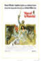 | Man Of La Mancha | 1972 | EN | mp4 | SD | Peter O'Toole, Sophia Loren, James Coco, Ian Richardson, Harry Andrews, John Castle, Brian Blessed, Julie Gregg, Rosalie Crutchley, Gino Conforti, Marne Maitland, Dorothy Sinclair, Miriam Acevedo, Dominic Barto, Poldo Bendandi, Peppi Borza, Mario Donen | |
| Meet Me In St Louis | 1944 | EN | mp4 | 720p | Judy Garland, Margaret O'Brien, Mary Astor, Lucille Bremer, Leon Ames, Tom Drake, Marjorie Main, Harry Davenport, June Lockhart, Henry H. Daniels Jr., Joan Carroll, Hugh Marlowe, Robert Sully, Chill Wills | ||
| Memphis | 2011 | EN | mp4 | 480p | Chad Kimball, Montego Glover, Derrick Baskin, J. Bernard Calloway, James Monroe Iglehart, Michael McGrath, Cass Morgan, Jennifer Allen, Brad Bass, Tracee Beazer, Tanya Birl, Kevin Covert, Preston W. Dugger III, Hillary Elk, Bryan Fenkart, Dionne Figgins, Bahiyah Sayyed Gaines, Rhett George, Todrick Hall, Robert Hartwell, John Jellison, Bryan Langlitz, Kyle Leland, Paul McGill, Andy Mills, Betsy Struxness, Dan'Yelle Williamson | ||
| 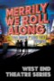 | Merrily We Roll Along | 2013 | EN | mp4 | 576p | Mark Umbers, Damian Humbley, Jenna Russell, Josefina Gabrielle, Clare Foster, Glyn Kerslake, Zizi Strallen | |
| Miguel De Molina Al Desnudo | 2021 | ES | mp4 | 720p | Ángel Ruiz | ||
| Miss Saigon the 25th Anniversary Performance | 2016 | EN | mp4 | 1080p | Eva Noblezada, Alistair Brammer, Jon Jon Briones, Hugh Maynard, Tamsin Carroll, Kwang-Ho Hong, Rachelle Ann Go, Lea Salonga | ||
| 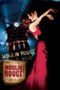 | Moulin Rouge! | 2001 | EN | mp4 | 1080p | Nicole Kidman, Ewan McGregor, John Leguizamo, Jim Broadbent, Richard Roxburgh, Garry McDonald, Jacek Koman, Matthew Whittet, Kerry Walker, Caroline O'Connor, Christine Anu, Natalie Mendoza, Lara Mulcahy, David Wenham, Kylie Minogue, Ozzy Osbourne, Deobia Oparei, Linal Haft, Keith Robinson, Peter Whitford, Norman Kaye, Arthur Dignam, Carole Skinner, Jonathan Hardy, Plácido Domingo, Kiruna Stamell, Anthony Young, Dee Donavan, Johnny Lockwood, Don Reid, Tara Morice, Daniel Scott, Veronica Beattie, Lisa Callingham, Rosetta Cook, Fleur Denny, Kelly Grauer, Jaclyn Hanson, Michelle Hopper, Fallon King, Wendy McMahon, Tracie Morley | |
| Mozart! Das Musical | 2016 | DE | mp4 | 480p | Thomas Borchert, Oedo Kuipers, Mark Seibert | ||
| The Music Man | 1962 | EN | mp4 | 1080p | Robert Preston, Shirley Jones, Buddy Hackett, Ron Howard, Hermione Gingold, Paul Ford, Pert Kelton, Timmy Everett, Susan Luckey, Peggy Mondo, Harry Hickox, Jesslyn Fax, Mary Wickes, Monique Vermont, Charles Lane, William Fawcett, Barbara Pepper, Max Showalter, Hank Worden, Sarah Seegar, Milton Parsons, Larri Thomas, Colin Kenny, Ronnie Dapo, Al Bain, Ralph Hart, Delos Jewkes | ||
| Musical of Musicals – the Musical!, The | 2021 | EN | mp4 | 720p | Sara Bareilles, Matthew Broderick, Betty Buckley, Hillary Clinton, André De Shields, Joel Grey, Richard Kind, Jane Krakowski, Telly Leung, Jose Llana, Patti LuPone, Lesli Margherita Andrea McArdle, Audra McDonald, Julianne Moore, Donna Murphy, Brad Oscar, Mandy Patinkin, Christine Pedi, Bernadette Peters, Chita Rivera, Ben Vereen, Lillias White | ||
 |
My Beautiful Laundrette | 2019 | EN | mp4 | 1080p | Paddy Daly, Kammy Darweish, Hareet Deol, Jonny Fines, Nicole Jebeli, Omar Malik, Balvinder Sopal, Cathy Tyson, Gordon Warnecke | |
| 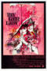 | My Fair Lady | 1964 | EN | mp4 | 1080p | Audrey Hepburn, Rex Harrison, Stanley Holloway, Wilfrid Hyde-White, Gladys Cooper, Jeremy Brett, Theodore Bikel, Mona Washbourne, Isobel Elsom, John Holland | |
| Never Say Goodbye | 2006 | JA | mp4 | 720p | Isono Chihiro, Mari Hanafusa, Ryouga Haruhi, Yuumi Hiro, Shijo Rui, Ritsu Tomomi, Yoka Wao, Yuga Yamato | ||
| Nine | 2009 | EN | mp4 | 1080p | Judi Dench, Daniel Day-Lewis, Marion Cotillard, Penélope Cruz, Sophia Loren, Nicole Kidman, Kate Hudson, Fergie, Ricky Tognazzi, Enzo Cilenti, Giuseppe Cederna, Elio Germano, Andrea Di Stefano, Roberto Nobile | ||
| Noah | 2014 | EN | mp4 | 1080p | Russell Crowe, Jennifer Connelly, Emma Watson, Logan Lerman, Anthony Hopkins, Kevin Durand, Ariane Rinehart, Ray Winstone, Douglas Booth, Marton Csokas, Dakota Goyo, Barry Sloane, Sami Gayle, Mark Margolis, Nick Nolte, Madison Davenport, Finn Wittrock, Gavin Casalegno, Arnoddur Magnus Danks, Jack Angel | ||
| Not The Messiah He's A Very Naughty Boy | 2010 | EN | mp4 | SD | Eric Idle, Michael Palin, Terry Jones, Terry Gilliam, Carol Cleveland, William Ferguson, Shannon Mercer, Rosalind Plowright, Christopher Purves, Neil Innes, John Du Prez, André Jacquemin, Sanjeev Bhaskar | ||
| Notre Dame de Paris | 1998 | FR | mp4 | 1080p | Hélène Ségara, Daniel Lavoie, Bruno Pelletier, Garou, Patrick Fiori, Luc Mervil, Julie Zenatti | ||
| Notre Dame De Paris | 2002 | IT | mp4 | 576p | Lola Ponce, Giò di Tonno, Vittorio Matteucci, Matteo Setti | ||
| Nuncrackers | 2001 | EN | mp4 | 480p | Rue McClanahan, John Ritter, Bambi Jones, Deborah del Mastro, Semina De Laurentis, Alison Walla, Lin Tucci, Mike Long, Carrie Keskinen, P.J. Terranova, Richard Long | ||
| Nunsensations | 2006 | EN | mp4 | 480p | Deborah del Mastro, Carolyn Droscoski, Georgia Engel, Bambi Jones, Carrie Keskinen, Bonnie Lee, Tom Mustachio, Jeanne Tinker, Lin Tucci, Dan Foss | ||
| Nunsense | 1993 | EN | mp4 | 480p | Rue McClanahan, Semina De Laurentis, Christine Toy Johnson, Terri White, Christine L. Anderson | ||
| Nunsense 2 the Second Coming | 1994 | EN | mp4 | 480p | Christine Toy Johnson, Semina De Laurentis, Terri White, Rue McClanahan, Christine L. Anderson | ||
| Nunsense 3 Sister Amnesia's Country Western Nunsense Jamboree | 1998 | EN | mp4 | 480p | Vicki Lawrence, Rue McClanahan, Deborah del Mastro, Nancy Johnson | ||
| Oh What A Lovely War | 1969 | EN | mp4 | 576p | Laurence Olivier, Vanessa Redgrave, Maggie Smith, John Mills, Corin Redgrave, Maurice Roeves, Ian Holm, Juliet Mills, Michael Bates, Edward Fox, Dirk Bogarde, Jean-Pierre Cassel, John Clements, John Gielgud, Jack Hawkins, Kenneth More, Michael Redgrave, Ralph Richardson, Susannah York, Robert Flemyng, Paul Daneman, Guy Middleton, Angela Thorne, Wendy Allnut, Colin Farrell, Malcolm McFee, John Rae, Paul Shelley, Kim Smith, Mary Wimbush, John Owens, Vincent Ball, Penelope Allen, Pia Colombo, Isabel Dean, Christian Doermer, Joe Melia, Nanette Newman, Cecil Parker, Natasha Parry, Gerald Sim, Thorley Walters, Anthony Ainley, Geoffrey Davies, Fanny Carby, Peter Gilmore, Ben Howard, Norman Jones, Angus Lennie, Paddy Joyce, Harry Locke, Ron Pember, Marianne Stone, Christine Noonan, Derek Newark, Clifford Mollison, Norman Bird, Jeremy Child, Richard Davies, Stanley Lebor, Jane Seymour, Wensley Pithey | ||
| Oh! Calcutta! | 1972 | EN | mp4 | 480p | Raina Barrett, Bill Macy, Margo Sappington, Mark Dempsey, Samantha Harper, Patricia Hawkins, Mitchell McGuire, Gary Rethmeier, Nancy Tribush, George Welbes, Peter Lanigan | ||
| Oklahoma | 1955 | EN | mp4 | 720p | Gordon MacRae, Shirley Jones, Gloria Grahame, Rod Steiger, Gene Nelson, Charlotte Greenwood, Eddie Albert, James Whitmore, Barbara Lawrence, Jay C. Flippen, Roy Barcroft, James Mitchell | ||
| Oklahoma | 1999 | EN | mp4 | 480p | Hugh Jackman, Josefina Gabrielle, Shuler Hensley, Jimmy Johnston, Maureen Lipman, Peter Polycarpou, Vicki Simon, Stuart Milligan | ||
| Oklahoma! In Concert | 2002 | EN | mp4 | 480p | Brent Barrett, Lisa Vroman, Maureen Lipman, Klea Blackhurst, Tim Flavin, Karl Daymond | ||
| Oliver! | 1968 | EN | mp4 | 720p | Ron Moody, Shani Wallis, Oliver Reed, Harry Secombe, Mark Lester, Jack Wild, Hugh Griffith, Joseph O'Conor, Peggy Mount, Leonard Rossiter, Hylda Baker, Kenneth Cranham, Megs Jenkins | ||
| On The Town | 1949 | EN | mp4 | 720p | Gene Kelly, Frank Sinatra, Betty Garrett, Ann Miller, Jules Munshin, Vera-Ellen, Florence Bates, Alice Pearce, George Meader, Hans Conried, Judy Holliday | ||
| On The Town | 2018 | EN | mp4 | 480p | Barnaby Rea, Nadim Naaman, Fra Fee, Nathaniel Hackmann, Siena Kelly, Louise Dearman, Celinde Schoenmaker, Claire Moore, Casey Al-Shaqsy, Nadia Johnson, Shem Hamilton | ||
| Once | 2007 | EN | mp4 | 720p | Glen Hansard, Markéta Irglová, Hugh Walsh, Gerard Hendrick, Alaistair Foley, Geoff Minogue, Bill Hodnett, Danuse Ktrestova, Darren Healy, Mal Whyte, Marcella Plunkett | ||
| One Mo' Time | 1986 | EN | mp4 | 480p | Vernel Bagneris, Sandra R. Phillips, Juanita Brooks, Sharon Nabonne, James R. Wilcher, Tim Harris, Charles Overton, Tony White, Ty Crusto, Peggy Alston, Stephanie Dellande, Stephanie Pope, Beth Shorter | ||
| One Touch of Venus | 1948 | EN | mp4 | 1080p | Robert Walker, Ava Gardner, Dick Haymes, Eve Arden, Olga San Juan, Tom Conway, James Flavin, Sara Allgood, Bess Flowers, Russ Conway, Gino Corrado, Dick Gordon, George J. Lewis, George Meeker, Anne Nagel, Arthur O'Connell, Ralph Peters | ||
| One Touch of Venus | 1955 | EN | mp4 | 480p | Janet Blair, Russell Nype, George Gaynes, Laurel Shelby, Mort Marshall, Iggie Wolfington | ||
| Open House | 2005 | EN | mp4 | SD | Jerry Doyle, James Duval, Jenna Leigh Green, Sally Kellerman, Ann Magnuson, Kellie Martin, Anthony Rapp | ||
| L'opéra De Quat'sous | 1931 | FR | mp4 | 576p | Bill Bocket, Lucy De Matha, Odette Florelle, Jacques Henley, Margo Lion, Gaston Modot, Albert Préjean | ||
| Pacific Overtures | 1976 | EN | mp4 | 480p | Mako, Soon-Tek Oh, Yuki Shimoda, Sab Shimono, Isao Sato, Alvin Ing, Ernest Harada, James Dybas, Mark Syers, Patrick Kinser-Lau, Ernest Abuba, Timm Fujii, Haruki Fujimoto, Larry Hama, Jae Woo Lee, Freddy Mao, Tom Matsusaka, Freda Foh Shen, Ricardo Tobia, Gedde Watanabe, Conrad Yama, Joey Ginza, Leslie Watanabe, Susan Kikuchi, Dingo Secretario, Kim Miyori, Kenneth S. Eiland, Kevin Maung, Genji Ito | ||
| Paint Your Wagon | 1969 | EN | mp4 | 720p | Lee Marvin, Clint Eastwood, Jean Seberg, Harve Presnell, Ray Walston, Tom Ligon, Alan Dexter, William O'Connell, Robert Easton, Geoffrey Norman, John Mitchum, Sue Casey, Roy Jenson | ||
| The Pajama Game | 1957 | EN | mp4 | SD | Doris Day, John Raitt, Carol Haney, Eddie Foy Jr., Reta Shaw, Barbara Nichols, Thelma Pelish, Jack Straw, Ralph Dunn, Larri Thomas | ||
| Pal Joey | 1957 | EN | mp4 | 1080p | Rita Hayworth, Frank Sinatra, Kim Novak, Barbara Nichols, Bobby Sherwood, Hank Henry, Elizabeth Patterson, Hermes Pan, John Alban | ||
| Panama Hattie | 1942 | EN | mp4 | 1080p | Red Skelton, Ann Sothern, Rags Ragland, Ben Blue, Marsha Hunt, Virginia O'Brien, Alan Mowbray, Dan Dailey, Jackie Horner, Carmen Amaya, Jackie Bardell, Ananias Berry, James Berry, Warren Berry, Pauline Byrne, Zedra Conde, Carl Esmond, Fred Graham, Stuart Hall, Lena Horne, Denise Lemley, Six Hits and a Miss, Roger Moore, Carmen Morales, Sol Murgi, George Nardelli, Wanda Perry, Suzanne Ridgeway, Christine Stafford, Max Wagner, Zoot Watson, George Watts, Grant Withers, Duke York, Joe Yule, Lucien Prival | ||
| Passion | 1996 | EN | mp4 | 576p | Jere Shea, Marin Mazzie, Donna Murphy, Tom Aldredge, Gregg Edelman | ||
| Passion | 2005 | EN | mp4 | SD | Michael Cerveris, Richard Easton, Allen Fitzpatrick, Patti LuPone, Audra McDonald | ||
| Peter Pan | 1956 | EN | mp4 | 480p | Mary Martin, Cyril Ritchard, Sondra Lee, Kathleen Nolan, Margalo Gillmore, Heller Halliday, Robert Harrington, Joe E. Marks, Norman Shelly, Joseph Stafford | ||
| Peter Pan | 1960 | EN | mp4 | 480p | Cyril Ritchard, Mary Martin, Lynn Fontanne | ||
| Peter Pan Live! | 2014 | EN | mp4 | 576p | Allison Williams, Christopher Walken, Minnie Driver, Christian Borle, Taylor Louderman, Kelli O'Hara, Jake Lucas, John Allyn, Caitlin Houlahan, Alanna Saunders, Chris Sullivan | ||
| Phantom | 2021 | KO | mp4 | 1080p | KyuHyun, Im Sunhae, Yoon Youngseok, Enoch, Lim Kihong, Shin Youngsook | ||
| The Phantom Of The Opera | 2004 | EN | mp4 | 1080p | Gerard Butler, Emmy Rossum, Patrick Wilson, Miranda Richardson, Minnie Driver, Ciarán Hinds, Simon Callow, Victor McGuire, Jennifer Ellison | ||
 |
The Phantom of the Opera | 2011 | EN | mp4 | 1080p | Ramin Karimloo, Sierra Boggess, Hadley Fraser, Kiera Duffy, Barry James, Gareth Snook, Liz Robertson, Wynne Evans, Sergei Polunin, Daisy Maywood, Nick Holder, Earl Carpenter, Philip Griffiths, Simon Green, Stephen John Davis, Gardar Thor Cortes, Heather Jackson, Ellen Jackson, Rosemary Ashe | |
| Pickwick | 1969 | EN | mp4 | 480p | Roy Castle, Robert Dorning, Bill Fraser, Joyce Grant, Hattie Jacques, Cheryl Kennedy, Michael Logan, Julian Orchard, Harry Secombe, Julia Sutton, Ian Trigger, Sheila White, Aubrey Woods | ||
| Pink Floyd: The Wall | 1982 | EN | mp4 | 1080p | Bob Geldof, Christine Hargreaves, James Laurenson, Eleanor David, Kevin McKeon, Bob Hoskins, David Bingham, Jenny Wright, Alex McAvoy, Ellis Dale, James Hazeldine, Ray Mort, Joanne Whalley, Nell Campbell, Margery Mason, Robert Bridges, Michael Ensign, Marie Passarelli, Winston Rose, Eddie Tagoe, Emma Longfellow, Rod Beddall, Peter Jonfield, Phil Davis, Gary Olsen, Dennis Fletcher, Jonathan Scott, Joanna Dickens, John Scott Martin, Marilyn Thomas, Brenda Cowling, Michael Burrell, Malcolm Rogers, John Broughton, Albert Moses, Vincent Wong, Mark Newman, Lucita Lijertwood, Betty Whelan, David Fleeshman, Joanna Andrews, Diana King, Roger Kemp, David Smythe, Keith Wray | ||
| Pippin | 1981 | EN | mp4 | 480p | Ben Vereen, William Katt, Lesley denniston, Benjamin Rayson, Martha Raye, Chita Rivera, Christopher Chadman | ||
| Pippin | 1981 | EN | mp4 | 480p | Ben Vereen, William Katt, Lesley denniston, Benjamin Rayson, Martha Raye, Chita Rivera, Christopher Chadman | ||
| The Pirates of Penzance | 1983 | EN | mp4 | 1080p | Kevin Kline, Angela Lansbury, Linda Ronstadt, George Rose, Rex Smith, Tony Azito | ||
| Porgy and Bess | 1993 | EN | mp4 | 576p | Willard White, Cynthia Haymon, Gregg Baker, Cynthia Clarey, Marietta Simpson, Damon Evans, Paula Ingram, Gordon Hawkins, Barrington Coleman | ||
| Privates On Parade | 1983 | EN | mp4 | 576p | John Cleese, Denis Quilley, Michael Elphick, Patrick Pearson, John Standing, Nicola Pagett, David Bamber, Bruce Payne, Joe Melia, Simon Jones, Neil Pearson, Julian Sands, John Quayle, Vincent Wong, Brigitte Kahn, Tim Barlow | ||
 |
The Producers | 2005 | EN | mp4 | 720p | Matthew Broderick, Uma Thurman, Will Ferrell, Eileen Essell, Gary Beach, Michael McKean, David Huddleston, Debra Monk, Andrea Martin, Jon Lovitz, Meg Gillentine, Bryn Dowling, Kevin Ligon, Ray Wills, Marilyn Sokol, Brent Barrett, Tory Ross, Brad Oscar, Nathan Lane, Roger Bart, Dan Bittner | |
| Purlie | 1981 | EN | mp4 | SD | Robert Guillaume, Melba Moore, Sherman Hemsley, Rhetta Hughes, Clarice Taylor, Don Scardino, Brandon Maggart, Linda Hopkins | ||
| Putting It Together | 2001 | EN | mp4 | SD | Carol Burnett, George Hearn, Ruthie Henshall, John Barrowman, Bronson Pinchot | ||
| Queen Esther | 2020 | EN | mp4 | 1080p | |||
| Queen of the Stardust Ballroom | 1975 | EN | mp4 | 720p | Maureen Stapleton, Charles Durning, Michael Brandon, Michael Strong, Charlotte Rae, Beverly Sanders, Alan Fudge, Martha Tilton, Hollis Irving | ||
| Ragtime | 2002 | EN | mp4 | SD | Maria Friedman, Dave Willetts, Graham Bickley, Kenita R. Miller, Lawrence Hamilton, Rebecca Thornhill, Gillian Bevan, Tim Howar, Gareth Snook | ||
| Reefer Madness | 2005 | EN | mp4 | 720p | Alan Cumming, Christian Campbell, Kristen Bell, Steven Weber, Ana Gasteyer, John Kassir, Amy Spanger, Robert Torti, Neve Campbell | ||
| Rembrandt De Musical | 2006 | NL | mp4 | SD | Henk Poort, Wieneke Remmers, Maike Boerdam, Annick Boer, Paul Vaes | ||
| Rent | 2005 | EN | mp4 | 720p | Anthony Rapp, Adam Pascal, Rosario Dawson, Jesse L. Martin, Wilson Jermaine Heredia, Idina Menzel, Tracie Thoms, Taye Diggs, Aaron Lohr, Daniel London, Sarah Silverman, Daryl Edwards, Anna Deavere Smith | ||
 |
Rent | 2008 | EN | mp4 | 720p | Will Chase, Adam Kantor, Michael McElroy, Rodney Hicks, Tracie Thoms, Justin Johnston, Renée Elise Goldsberry, Eden Espinosa, Marcus Paul James, Gwen Stewart, Jay Wilkison, Telly Leung, Shaun Earl, Andrea Goss, Tracy McDowell, Jesse L. Martin, Wilson Jermaine Heredia, Anthony Rapp, Daphne Rubin-Vega | |
 |
Rent | 2019 | EN | mp4 | 720p | Jordan Fisher, Brennin Hunt, Vanessa Hudgens, Kiersey Clemons, Brandon Victor Dixon, Valentina, Mario, Tinashe, Keala Settle, Jennifer Leigh Warren, Emerson Collins, Taye Diggs, Jesse L. Martin, Idina Menzel, Anthony Rapp, Wilson Jermaine Heredia, Adam Pascal, Daphne Rubin-Vega, Fredi Walker-Browne | |
| Rent | 2020 | EN | mp4 | 1080p | Jocasta Almgill, Blake Patrick Anderson, Kayla Carter, Allie Daniel, Tom Francis, Ahmed Hamad, Dom Hartley-Harris, Isaac Hesketh, Millie O'Connell, Maiya Quansah-Breed, Bethany Terry, Alex Thomas-Smith | ||
| Rent | 2021 | ES | mp4 | 720p | Lucia Ambrosini, Patricio Arellano, Luján Blaksley, Paula Chouhy, Federico Coates, Michelle Csapek, Franco Friguglietti, Macarena Giráldez, Michel Hersch, Cande Molfese, Emely Myles, Mariel Percossi, Julián Pucheta, Lula Rosenthal, Pablo Turturiello, Pedro Vega, Manu Victoria, Pato Witis | ||
 |
The Rise and Fall of the City of Mahagonny | 2011 | EN | mp4 | 1080p | Jane Henschel, Donald Kaasch, Willard White, Measha Brueggergosman, Michael König, John Easterlin, Otto Katzameier, Steven Humes | |
| Roald Dahl's Matilda The Musical | 2022 | EN | mp4 | 1080p | Alisha Weir, Emma Thompson, Lashana Lynch, Stephen Graham, Andrea Riseborough, Sindhu Vee, Carl Spencer, Charlie Hodson-Prior, Meesha Garbett, Rei Yamauchi Fulker, Lauren Alexandra, Winter Jarrett Glasspool, Andrei Shen, Ashton Robertson, Katherine Kingsley, Amber Adeyinka, James Laurenson, Ann Firbank, Amanda Lawrence, Thomas Arnold, James Dryden, Matt Henry, Karen Mavundukure, Tia Isaac, Ella Chadwick, Erin Rushidi, Rudy Gibson | ||
 |
The Robber Bridegroom | 1980 | EN | mp4 | 480p | Marjoe Gortner, Kaye Ballard, Gene Lindsey, Pippa Pearthree, Ernie Sabella, John Goodman | |
| 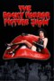 | The Rocky Horror Picture Show | 1975 | EN | mp4 | 1080p | Tim Curry, Susan Sarandon, Barry Bostwick, Richard O'Brien, Patricia Quinn, Nell Campbell, Jonathan Adams, Peter Hinwood, Meat Loaf, Charles Gray, Fran Fullenwider | |
| The Rocky Horror Tribute Show | 2008 | EN | mp4 | SD | Adrian Edmondson, Stephen Gately, Sophie Lawrence, Joanne Farrell, Michael Ball, Anthony Stewart Head, Kraig Thornber, Ben Richards, Toyah Willcox, Amy Rosefield, Nell Campbell, Gary Amers, Julian Littman, Richard O'Brien, Patricia Quinn, Kimi Wong, Robin Cousins, Christopher Biggins, Rayner Bourton, Tony Slattery, Jamie Theakston, Steve Pemberton, David Combes, Emma Kershaw, James Spilling, Anne Skates | ||
| The Rocky Horror Show Live | 2015 | EN | mp4 | 720p | Richard O'Brien, David Bedella, Ben Forster, Haley Flaherty, Kristian Lavercombe, Sophie Linder-Lee, Jayde Westaby, Richard Meek, Dominic Andersen, Anthony Stewart Head, Adrian Edmondson, Stephen Fry, Mel Giedroyc, Emma Bunton, Rachel Grundy, Will Knights, Hannah Malekzad, Andrew Ahern, Ben Kerr | ||
| The Rocky Horror Picture Show | 2016 | EN | mp4 | 720p | Tim Curry, Laverne Cox, Victoria Justice, Ryan McCartan, Staz Nair, Reeve Carney, Adam Lambert, Christina Milian, Annaleigh Ashford, Ben Vereen, Ivy Levan | ||
| The Rocky Horror Show | 2021 | ES | mp4 | 720p | Roberto Peloni, Melania Lenoir, Federico Coates, Walter Bruno, Sofía Rangone, Ignacio Perez Cortes, Mica Pierani Méndez, Maia Contreras | ||
| The Rocky Horror Skivvies Show | 2021 | EN | mp4 | 1080p | Lauren Molina, Nick Cearley, Tom Hewitt, Krysta Rodriguez, Sutton Lee Seymour, Nick Adams, J. Harrison Ghee, Marissa Rosen, Alison Fraser, Nathan Lee Graham, Amy Hillner Larsen, Asmeret Ghebremichael, Travis Kent, Rob Morrison | live at Joe's Pub | |
| The Wall Live in Berlin | 2006 | EN | mp4 | 576p | Roger Waters, Ute Lemper, Cyndi Lauper, Thomas Dolby, Sinéad O'Connor, Rick Danko, Levon Helm, Garth Hudson, Eric Bazilian, Rob Hyman, John Lilley, Fran Smith Jr., David Uosikkinen, Joni Mitchell, James Galway, Jerry Hall, Paul Carrack, Van Morrison, Tim Curry, Marianne Faithfull, Albert Finney, Rick Difonzo, Snowy White, Andy Fairweather-Low, Peter Wood, Nick Glennie-Smith, Bryan Adams, Graham Broad | ||
| Le Roi Soleil | 2006 | FR | mp4 | SD | Emmanuel Moire, Christophe Maé, Anne-Laure Girbal | ||
| Rómeó És Júlia | 2005 | HU | mp4 | 576p | Dolhai Attila, Szinetár Dóra, Mészáros Árpád Zsolt, Bereczki Zoltán, Szabó P. Szilveszter, Janza Kata, Csuha Lajos | ||
| Roméo Et Juliette De La Haine a L'amour | 2001 | FR | mp4 | 480p | Damien Sargue, Cecilia Cara, Gregorio Baquet, Philippe D´Avilla | ||
| Roméo Et Juliette De La Haine a L'amour | 2010 | FR | mp4 | 576p | Damien Sargue, Joy Esther, Niccolai, John Eyzen, Tom Ross, Stéphane Métro | ||
| Romeo Und Julia | 2005 | EN | mp4 | 576p | Lukas Perman, Marjan Shaki, Mathias Edenborn, Rasmus Borkowski, Mark Seibert, Zuzanna Maurery, Annette Wimmer, Paul Vaes, Carin Filipcic | ||
| Rudolf - Affaire Mayerling | 2009 | DE | mp4 | 1080p | Drew Sarich, Lisa Antoni, Uwe Kröger, Klaus Dam, Karin Filipcic | ||
| Ruthless! The Musical | 2019 | EN | mp4 | 720p | Jason Gardiner, Kim Maresca, Anya Evans, Harriet Thorpe, Lara Denning, Tracie Bennett, Peter Land | ||
| Sarafina! | 1992 | EN | mp4 | 1080p | Leleti Khumalo, Whoopi Goldberg, John Kani, Miriam Makeba, Mary Twala, Dumisani Dlamini, Mbongeni Ngema, Tertius Meintjes, Robert Whitehead, Greg Latter, Nicky Rebelo, James Whyle, Michelle Bestbier, Patrick Ndlovu | ||
| Seven Brides For Seven Brothers | 1954 | EN | mp4 | 720p | Howard Keel, Jeff Richards, Russ Tamblyn, Tommy Rall, Marc Platt, Jane Powell, Jacques d'Amboise, Julie Newmar, Matt Mattox, Nancy Kilgas, Betty Carr, Virginia Gibson, Ruta Lee, Norma Doggett, Ian Wolfe, Howard Petrie, Earl Barton, Dante DiPaolo, Kelly Brown, Matt Moore | ||
| Shangri La | 1960 | EN | mp4 | 480p | John Abbott, Richard Basehart, Helen Gallagher, Alice Ghostley, Gene Nelson, Marisa Pavan, Claude Rains, James Valentine | ||
| She Loves Me | 2016 | EN | mp4 | 480p | Laura Benanti, Zachary Levi, Jane Krakowski, Byron Jennings | ||
| Shock Treatment 540p | 1981 | EN | mp4 | 480p | Jessica Harper, Cliff DeYoung, Richard O'Brien, Patricia Quinn, Charles Gray, Ruby Wax, Nell Campbell, Rik Mayall, Barry Humphries, Darlene Johnson, Manning Redwood, Jeremy Newson, Betsy Brantley, Perry Bedden, Gary Shail, Barry Dennen, Gary Martin | ||
| Show Boat | 1936 | EN | mp4 | 720p | Irene Dunne, Allan Jones, Charles Winninger, Paul Robeson, Helen Morgan, Helen Westley, Queenie Smith, Sammy White, Donald Cook, Hattie McDaniel, Francis X. Mahoney, Marilyn Knowlden, Sunnie O'Dea, Arthur Hohl, Charles Middleton, Clarence Muse, E. E. Clive, Eddie "Rochester" Anderson, J. Farrell MacDonald | ||
| Show Boat | 1951 | EN | mp4 | 1080p | Howard Keel, Kathryn Grayson, Ava Gardner, Joe E. Brown, Marge Champion, Gower Champion, Robert Sterling, Agnes Moorehead, Bess Flowers, Leif Erickson, William Warfield, Linda Christian, Adele Jergens, Anna Q. Nilsson, Bert Roach, Regis Toomey | ||
| Show Boat | 1988 | EN | mp4 | 480p | Marsha Bagwell, Rebecca Baxter, Eddie Bracken, P. L. Brown, Shelly Burch, Ellia English, Lenora Nemetz, Lee Roy Reams, Richard White | ||
| Show Boat | 2015 | EN | mp4 | 720p | Fred Willard, Norm Lewis, Jane Alexander, Lauren Worsham, Vanessa Williams, Julian Ovenden, Christopher Fitzgerald, Natasha Yvette Williams | ||
| 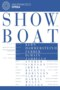 | Show Boat [SF Opera] | 2015 | EN | mp4 | 480p | Michael Todd Simpson, Heidi Stober, Bill Irwin, Patricia Racette, Harriet Harris, Morris Robinson, Angela Renee Simpson, Kirsten Wyatt, John Bolton | |
| Show Girl | 1961 | EN | mp4 | SD | Carol Channing, Jules Munshin, Les Quat' Jeudis | ||
| Shrek The Musical | 2013 | EN | mp4 | 720p | Brian d'Arcy James, Sutton Foster, Christopher Sieber, John Tartaglia, Daniel Breaker, Marissa O'Donnell, Rachel Stern | ||
| Si Nos Dejan | 2020 | EN | mp4 | 720p | Sergio Alazcuaga, Nathan Bank, Alejandra Desiderio, Abel Fernando, Frida, Paco Huacuja, José Antonio López Tercero, Leticia López, Alejandro Marquina, Ricardo Maza, José Andrés Mojica, Orlando Muñiz, Juan Navarro, Agustín Ocegueda, Javier Oliván, Mariano Palacios, Marco Paredes, Donatella Pelayo, Michelle Rodríguez, Marco Salazar, Samantha Salgado, Dagmariz Serafín, Rogelio Suárez, Mariana Vargas, Angie Vega | ||
| Silk Stockings | 1957 | EN | mp4 | 1080p | Fred Astaire, Cyd Charisse, Janis Paige, Wim Sonneveld, Peter Lorre, George Tobias, Jules Munshin, Joseph Buloff | ||
| Singin' In The Rain | 1952 | EN | mp4 | 720p | Gene Kelly, Donald O'Connor, Debbie Reynolds, Jean Hagen, Millard Mitchell, Cyd Charisse, Douglas Fowley, Rita Moreno, Mae Clarke, Bess Flowers, Robert Foulk, Kathleen Freeman, Joi Lansing, Sylvia Lewis, 'Snub' Pollard, William Schallert, Elaine Stewart, Brick Sullivan | ||
| Something for the Boys | 1944 | EN | mp4 | SD | Carmen Miranda, Michael O'Shea, Vivian Blaine, Phil Silvers, Sheila Ryan, Perry Como, Glenn Langan, Eddie Acuff, Rory Calhoun, Chester Conklin, Jimmie Dodd, Thurston Hall, Murray Hamilton, June Haver, Judy Holliday, Paul Hurst, Clarence Kolb, Garry Owen, Murray Alper, Gloria Marlen | ||
| Something's Afoot | 1984 | EN | mp4 | SD | Tony Van Bridge, Andy Gibb, Pam Hyatt, Don McManus, Charlotte Moore, Blaine Parker, Brian Petchey, Wayne Robson, Jean Stapleton, Lenore Zann | ||
| Song & Dance | 1984 | EN | mp4 | 576p | Sarah Brightman, Wayne Sleep | ||
| Songs For a New World | 2020 | EN | mp4 | 720p | Rachel John, Ramin Karimloo, Cedric Neal, Rachel Tucker, Shem Omari James | ||
| Sophisticated Ladies | 1981 | EN | mp4 | 480p | Hinton Battle, Gregg Burge, Michael Scott Gregory, Phyllis Hyman, Paula Kelly, Terri Klausner | ||
| The Sound Of Music | 1965 | EN | mp4 | 1080p | Julie Andrews, Christopher Plummer, Eleanor Parker, Richard Haydn, Peggy Wood, Charmian Carr, Anna Lee, Portia Nelson, Heather Menzies, Nicholas Hammond, Duane Chase, Angela Cartwright, Debbie Turner, Kym Kareth, Ben Wright, Norma Varden, Marni Nixon, Evadne Baker, Doris Lloyd, Gilchrist Stuart, Daniel Truhitte | ||
| The Sound of Music Live! | 2013 | EN | mp4 | 720p | Carrie Underwood, Stephen Moyer, Laura Benanti, Christian Borle, Audra McDonald, Ariane Rinehart, Michael Campayno, Sophia Anne Caruso, Peyton Ella, Michael Nigro, Grace Rundhaug, Ella Watts-Gorman, Joe West, Jessica Molaskey, Christiane Noll, Elena Shaddow, Kristine Nielsen, C.J. Wilson, Sean Cullen, John Bolger, Michael Park, Jake Boyd | ||
| The Sound of Music Live! | 2015 | EN | mp4 | 1080p | Kara Tointon, Julian Ovenden, Katherine Kelly, Alexander Armstrong, Maria Friedman, Evelyn Hoskins, Jon Tarcy, Amy Snudden, Martha Otterburn, Guy Trundle, Jessica Burden, Ellen Coleman, Zac Lester, Norma Atallah, Julie Atherton, Imelda de los Reyes, Mel Giedroyc, David Bamber, Paul Copley, Paul Jesson, James Lailey, Jane How, Claire Oberman, Peter Vollebregt | ||
| South Pacific | 1958 | EN | mp4 | 720p | Rossano Brazzi, Mitzi Gaynor, John Kerr, Ray Walston, Juanita Hall, France Nuyen, Russ Brown, Jack Mullaney, Ken Clark, Floyd Simmons, Candace Lee, Warren Hsieh, Tom Laughlin, Giorgio Tozzi, Archie Savage | ||
| South Pacific | 2001 | EN | mp4 | 480p | Glenn Close, Harry Connick Jr., Rade Serbedzija, Jack Thompson, Lori Tan Chinn, Ilene Graff, Natalie Mendoza, Simon Burke, Steve Bastoni, Kimberly Davies, Robert Pastorelli, Craig Ball, Damon Herriman, Salvatore Coco, Peter Lamb | ||
| South Pacific | 2006 | EN | mp4 | 480p | Reba McEntire, Brian Stokes Mitchell, Alec Baldwin, Lillias White, Jason Danieley | ||
 |
South Pacific | 2010 | EN | mp4 | 480p | Kelli O'Hara, Paulo Szot, Danny Burstein, Loretta Ables Sayre, Adam Samonsky, Sean Cullen, Li Jun Li | |
| Spartacus Le Gladiateur | 2004 | EN | mp4 | 576p | Alain Chenneviere, Jerome Collet, Olivier Constantin, Christophe Heraut, Hillya, Moise N'Tumba, Yaël | ||
 |
A Star Is Born | 1954 | EN | mp4 | 1080p | Judy Garland, James Mason, Jack Carson, Charles Bickford, Tommy Noonan, Lucy Marlow, Amanda Blake, Irving Bacon, Hazel Shermet, Lotus Robb | |
 |
A Star Is Born | 1976 | EN | mp4 | 720p | Barbra Streisand, Kris Kristofferson, Gary Busey, Oliver Clark, Paul Mazursky, Joanne Linville, Venetta Fields, Clydie King, Marta Heflin, Sally Kirkland, M.G. Kelly, Bill Graham, Rita Coolidge, Tony Orlando, Robert Englund, Sandy Helberg, Maidie Norman, Susan Richardson, Roslyn Kind, Aesop Aquarian | |
| A Star Is Born | 2018 | EN | mp4 | 1080p | Bradley Cooper, Lady Gaga, Sam Elliott, Andrew Dice Clay, Rafi Gavron, Anthony Ramos, Dave Chappelle, Marlon Williams, Brandi Carlile, Ron Rifkin, Barry Shabaka Henley, Michael D. Roberts, Michael Harney, Rebecca Field, Willam Belli, Greg Grunberg, D.J. "Shangela" Pierce, Eddie Griffin, Drena De Niro, Jacob Schick, Gabe Fazio, Luenell, Lukas Nelson, Anthony LoGerfo, Corey McCormick, Logan Metz, Tato Melgar, Don Roy King, Halsey, Alec Baldwin, Leandro De Niro Rodriguez | ||
| Starmania | 1989 | EN | mp4 | 576p | Norman Groulx, Richard Groulx, Renaud Hantson, Luc Lafitte, Sabrina Lory, Réjane Perry, Martine St-Clair, Wenta | ||
 |
State Fair | 1933 | EN | mp4 | 1080p | Janet Gaynor, Will Rogers, Lew Ayres, Sally Eilers, Norman Foster, Louise Dresser, Frank Craven, Victor Jory, Frank Melton, Hobart Cavanaugh, Doro Merande, Erville Alderson, Joe Caits, Judge Dike, Harry Holman, Edward Mundy, John Sheehan, Lucille Ward, Ruth Warren | |
| Stop the World – I Want to Get Off | 1978 | EN | mp4 | SD | Shelly Burch, Dennis Daniels, Sammy Davis Jr., Wendy Edmead, Edwetta Little, Randon Lo, Debora Masterson, Marian Mercer, Joyce Nolen | ||
| Stop the World, I Want to Get Off | 1996 | EN | mp4 | 480p | Peter Scolari, Stephanie Zimbalist | ||
| 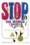 | Stop the World: I Want to Get Off | 1966 | EN | mp4 | SD | Tony Tanner, Millicent Martin, Leila Croft, Valerie Croft, Neil Hawley | |
| Summer Stock | 1950 | EN | mp4 | 720p | Judy Garland, Gene Kelly, Eddie Bracken, Gloria DeHaven, Marjorie Main, Phil Silvers, Ray Collins, Nita Bieber, Carleton Carpenter, Hans Conried | ||
| Sunday In The Park With George | 1986 | EN | mp4 | 480p | Mandy Patinkin, Bernadette Peters, Barbara Bryne, Mary D'Arcy, Sue Anne Gershenson, Cris Groenendaal, Dana Ivey, John Jellison, Charles Kimbrough, Frank Kopyc, Judith Moore, Nancy Opel, William Parry, Natalie Polizzi, Michele Rigan, Melanie Vaughan, Robert Westenberg, Brent Spiner | ||
| Sunset Boulevard in Concert | 2020 | EN | mp4 | 1080p | Ria Jones, Danny Mac, Adam Pearce, Molly Lynch, Dougie Carter, Carl Sanderson, Kristoffer Hellström, Joanna Goodwin, Jessica Paul, Joanna O'Hare, Gemma Naylor, Benjamin Chambers, Barney Wilkinson, James Meunier, Sam Peggs, Owen Chaponda | ||
| Sweeney Todd el barber diabòlic del carrer Fleet | 1995 | CA | mp4 | 720p | Constantino Romero, Vicky Peña, Pep Molina, Teresa Vallicrosa, Maria Josep Paris, Xavier Ribera, Pedro Pomares, Muntsa Rius, Esteve Ferrer, Jordi Muixi | ||
| Sweeney Todd The Demon Barber of Fleet Street | 1980 | EN | mp4 | 720p | Denis Quilley, Sheila Hancock, Andrew C. Wadsworth, Mandy More, Austin Kent, Michael Staniforth, David Wheldon-Williams, John Aron, Dilys Watling | ||
| Sweeney Todd The Demon Barber Of Fleet Street | 1982 | EN | mp4 | 480p | Angela Lansbury, George Hearn, Cris Groenendaal, Edmund Lyndeck, Calvin Remsberg | ||
| Sweeney Todd The Demon Barber Of Fleet Street | 2007 | EN | mp4 | 1080p | Johnny Depp, Helena Bonham Carter, Alan Rickman, Timothy Spall, Sacha Baron Cohen, Jamie Campbell Bower, Jayne Wisener, Ed Sanders, Laura Michelle Kelly, Anthony Stewart Head, Buck Holland, David McKail, Sophie Morris-Sheppard, Colin Higgins | ||
| Sweeney Todd The Demon Barber Of Fleet Street In Concert | 2001 | EN | mp4 | 576p | Patti LuPone, George Hearn, Neil Patrick Harris, Victoria Clark, Davis Gaines, Lisa Vroman | ||
| Sweeney Todd: The Demon Barber of Fleet Street | 2014 | EN | mp4 | 720p | Emma Thompson, Bryn Terfel, Jeff Blumenkrantz, Christian Borle, Kyle Brenn, Jay Armstrong Johnson, Erin Mackey, Philip Quast, Audra McDonald | ||
| Sweet Charity | 1969 | EN | mp4 | 720p | Shirley MacLaine, John McMartin, Ricardo Montalban, Sammy Davis, Jr., Chita Rivera, Paula Kelly, Stubby Kaye, Barbara Bouchet, Suzanne Charney, Alan Hewitt, Dante DiPaolo | ||
| Tabоо | 2003 | EN | mp4 | 720p | Zee Asher, Paul Baker, Decían Bennett, Gemma Craven, Joe Docherty, Luke Evans, Hannah Jane Fox, Lucy Harris, Michele Hooper, Drew Jaymson, Gail MacKinnon, Mark McGee, Andy Morton, Euan Morton, Lucy Newton, George O'Dowd, Mark White | ||
 |
Tales of the City, A New Musical | 2021 | EN | mp4 | 1080p | Betsy Wolfe, Judy Kaye, Mary Birdsong, Josh Breckenridge, Manoel Felciano, Diane J. Findlay, Kathleen Elizabeth Monteleone, Richard Poe, Julie Reiber, Patrick Lane, Andrew Samonsky, Wesley Taylor, Keith A. Bearden, Jessica Coker, Kristoffer Cusick, Kimberly Jensen, Alex Hsu, Stuart Marland, Jeff McLean, Pamela Myers, Josh Walden | |
| 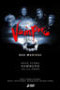 | Tanz der Vampire | 2005 | DE | mp4 | 1080p | Kevin Tarte, Jessica Kessler, Max Niemeyer, Stefan Poslovski, Jerzy Jeske, Franzika Forster, Tim Reichwein, Simone Pohl, Stefan Büdenbender | AI Upscaled |
| Tell Me on a Sunday | 1980 | EN | mp4 | 576p | Marti Webb | ||
| The Ten Commandments | 2006 | EN | mp4 | 480p | Val Kilmer, Kevin Earley, Lauren Kennedy | ||
| There's No Business Like Show Business | 1954 | EN | mp4 | 720p | Ethel Merman, Marilyn Monroe, Mitzi Gaynor, Dan Dailey, Donald O'Connor, Johnnie Ray, Richard Eastham, Hugh O'Brian, Frank McHugh, Rhys Williams, Lee Patrick, Eve Miller, Dorothy Abbott, Lyle Talbot, George Chakiris, John Doucette, Alvy Moore, Ron Nyman, Walter Winchell, Dorothy Adams, Robin Raymond | ||
| Thoroughly Modern Millie | 1967 | EN | mp4 | 576p | Julie Andrews, James Fox, Mary Tyler Moore, Carol Channing, John Gavin, Jack Soo, Pat Morita, Philip Ahn, Anthony Dexter, Beatrice Lillie, Cavada Humphrey, Robert Foulk, Herbie Faye, Benny Rubin, Michael St. Clair, Leoda Richards | ||
| The Threepenny Opera | 2016 | EN | mp4 | 1080p | Rory Kinnear, Rosalie Craig, Nick Holder, Haydn Gwynne, Sharon Small, Peter De Jersey, George Ikediashi | ||
| Tick, Tick... BOOM! | 2021 | EN | mp4 | 1080p | Andrew Garfield, Alexandra Shipp, Robin de Jesús, Vanessa Hudgens, Joshua Henry, Bradley Whitford, Judith Light, MJ Rodriguez, Lin-Manuel Miranda, Phillipa Soo, Renée Elise Goldsberry, Daphne Rubin-Vega, Black Thought, Christopher Jackson, Alex Lacamoire, Kate Rockwell, Richard Kind, Joel Grey, Chita Rivera, Joanna Adler, Noah Robbins, Kenita R. Miller, Ken Holmes, Jonathan Marc Sherman, Ben Ross, Laura Benanti, Utkarsh Ambudkar, Danielle Ferland, Micaela Diamond, Gizel Jimenez, Joel Perez, Judy Kuhn, Danny Burstein, Ryan Vasquez, Jelani Alladin, André De Shields, Bernadette Peters, Beth Malone, Bebe Neuwirth, Joe Iconis, Stephen Schwartz, Brian Stokes Mitchell, Janet Dacal, Lauren Marcus, Chuck Cooper, Luis A. Miranda Jr., Aneesa Folds, Nick Blaemire, Howard McGillin, Adam Pascal, Wilson Jermaine Heredia, James C. Nicola, Roger Bart, Marc Shaiman, Grace McLean, Eli Bolin, Chad Beguelin, Matthew Sklar, Georgia Stitt, Jeanine Tseori, Jason Robert Brown, Shaina Taub, Tom Kitt, Amanda Green, Jaime L. Lozano, Dave Malloy, Helen Park, Stephen Trask, Steven Levenson, Quiara Alegría Hudes, Matthew McCollum, Eisa Davis, Phylicia Rashād, Stephen Sondheim | ||
| Tommy | 1975 | EN | mp4 | 1080p | Oliver Reed, Ann-Margret, Roger Daltrey, Elton John, Eric Clapton, Jack Nicholson, John Entwistle, Keith Moon, Paul Nicholas, Robert Powell, Pete Townshend, Tina Turner, Arthur Brown, Victoria Russell, Ben Aris | ||
| 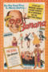 | Top Banana | 1954 | EN | mp4 | 480p | Phil Silvers, Rose Marie, Danny Scholl, Judy Lynne, Jack Albertson, Bradford Hatton, Johnny Coy, Dick Dana, Joey Faye, Johnny Trama, Herbie Faye, Gloria Smith, Walter Darewahl, George Marcy, Flash Hogan | |
| Top Hat | 1935 | EN | mp4 | 720p | Fred Astaire, Ginger Rogers, Edward Everett Horton, Erik Rhodes, Eric Blore, Helen Broderick, Lucille Ball, Gino Corrado, Leonard Mudie, Dennis O'Keefe, Nick Thompson, Tom Ricketts | ||
| Top Hat | 2015 | EN | mp4 | 480p | Manato Asaka, Rion Misaki, Hiroki Nanami | ||
| The Toxic Avenger | 2021 | EN | mp4 | 1080p | Ben Irish, Natalie Hope, Emma Salvo, Oscar Conlon-Morrey, Che Francis | ||
| Trevor: The Musical | 2022 | EN | mp4 | 1080p | Holden William Hagelberger, Diego Lucano, Yasmeen Sulieman, Aaron Alcaraz, Alyssa Emily Marvin, Sammy Dell, Isabel Medina, Aryan Simhadri, Sally Wilfert, Jarrod Zimmerman, Echo Deva Picone, Mark Aguirre, Ava Briglia, Tyler Joseph Gay, Ellie Kim, Colin Konstanty, Brigg Liberman, Dan Rosales, Aeriel Williams | ||
| Trouble in Tahiti | 2001 | EN | mp4 | 480p | Karl Daymond, Stephanie Novacek, Tom Randle, Mary Hegarty | ||
| Trouble in Tahiti | 2020 | EN | mp4 | 720p | Quirijn de Lang, Wallis Giunta, Fflur Wyn, Joseph Shovelton, Nicholas Butterfield, Charlie Southby | ||
| The Unsinkable Molly Brown | 1964 | EN | mp4 | 720p | Debbie Reynolds, Harve Presnell, Ed Begley, Jack Kruschen, Hermione Baddeley, Vassili Lambrinos, Fred Essler, Harvey Lembeck, Lauren Gilbert, Kathryn Card, Hayden Rorke, Harry Holcombe, Amy Douglass, George Mitchell, Martita Hunt, Vaughn Taylor, Audrey Christie, Grover Dale, Brendan Dillon, Gus Trikonis, Gertrude Astor, Minta Durfee, Anna Lee, Scott McCartor, Ottola Nesmith, Moyna MacGill, Eleanor Audley | ||
| Victor:Victoria | 1982 | EN | mp4 | 720p | Julie Andrews, James Garner, Robert Preston, Lesley Ann Warren, Alex Karras, John Rhys-Davies, Graham Stark, Malcolm Jamieson, Peter Arne, Sherloque Tanney, Geoffrey Edwards, Matyelok Gibbs | ||
| Victor:Victoria | 1995 | EN | mp4 | 480p | Julie Andrews, Michael Nouri, Tony Roberts | ||
| Violet | 2019 | EN | mp4 | 720p | Kaisa Hammarlund, Matthew Harvey, Jay Marsh, Simbi Akande, Angelica Allen, Kenneth Avery-Clark, Keiron Crook, James Gant, Danny Michaels, Janet Mooney, Amy Mepham, Rebecca Nardin, Madeleine Sellman | ||
| The War of the Worlds | 2006 | EN | mp4 | 576p | Richard Burton, Justin Hayward, Alexis James, Anna-Marie Wayne, Chris Thompson, Russell Watson, Tara Blaise, Jerry Wayne | ||
| The War of the Worlds the New Generation | 2013 | EN | mp4 | SD | Jason Donovan, Liam Neeson, Kerry Ellis, Michael Falzon, Daniel Osgerby, Marti Pellow, Will Stapleton, Ricky Wilson | ||
| Welcome to Woop Woop | 1998 | EN | mp4 | 1080p | Johnathon Schaech, Rod Taylor, Susie Porter, Richard Moir, Barry Humphries, Maggie Kirkpatrick, Paul Mercurio, Mark Wilson, Rachel Griffiths, Tina Louise, Felix Williamson, Kevin Copeland | ||
| West Side Story | 1961 | EN | mp4 | 720p | Natalie Wood, Richard Beymer, Russ Tamblyn, Rita Moreno, George Chakiris, Simon Oakland, Ned Glass, William Bramley, Tucker Smith, Susan Oakes, Jose De Vega, Gina Trikonis, Carole D'Andrea, Eliot Feld, Tony Mordente, David Winters, Scooter Teague, Yvonne Othon, John Astin, Penny Santon, Suzie Kaye, Anne Miya, Bert Michaels | ||
| West Side Story | 2021 | EN | mp4 | 1080p | Ansel Elgort, Rachel Zegler, Rita Moreno, Ariana DeBose, David Alvarez, Corey Stoll, Brian d'Arcy James, Josh Andrés Rivera, Mike Faist, Ana Isabelle, Paloma Garcia-Lee, Maddie Ziegler, Andrea Burns, Kyle Allen, Curtiss Cook, Jamie Harris, Sean Harrison Jones, Patrick Higgins, Julius Anthony Rubio, Ricardo Zayas, Sebastian Serra, Carlos Sánchez Falú, Jamila Velazquez, Talia Ryder, Jamiyka Jones, Michael P.J. Marston, Atif Lanier, Cameron Sawyer, Ben Cook, Gabriela Soto, Tanairi Sade Vazquez, Chryssie Whitehead, Eloise Kropp, Michael Ronca, Ricky Ubeda, Andrei Chagas, Kyle Coffman, Annelise Cepero, Harrison Coll, Iris Menas | ||
| When Pigs Fly | 2020 | EN | mp4 | 720p | Jiovanni Daniel, Zachary Bigelow, Luke Bovenizer, Nick Hardin, Thom Christopher Warren, Nina West | ||
 |
Where's Charley? | 1952 | EN | mp4 | 480p | Ray Bolger, Allyn Ann McLerie | |
| Wicked in Concert | 2021 | EN | mp4 | 1080p | Idina Menzel, Kristin Chenoweth, Rita Moreno, Cynthia Erivo, Jennifer Nettles, Amber Riley, Alex Newell, Ariana DeBose, Ali Stroker, Gavin Creel, Gabrielle Ruiz, Isaac Powell, Mario Cantone, Stephanie Hsu | ||
| The Will Rogers Follies: A Life In Revue | 1993 | EN | mp4 | 480p | Keith Carradine, Dee Hoty, Dick Latessa, Cady Huffman, Gregory Peck, Vince Bruce, Jerry Mitchell, John Ganun, Troy Britton Johnson, Jason Opsahl, Tom Brackney, Bonnie Brackney, Paul Ukena, Jr., Roxane Barlow, Maria Calabrese, Rebecca Downing, Colleen Dunn, Toni Georgiana, Eileen Grace, Luba Mason, Dana Jackson, Stephanie Pope, Angie L. Schworer, Carol Denise Smith, Aimee Turner, Jillana Laufer, Wendy Waring, Christina Youngman, Gregory Scott Carter, Rick Faugno, Tammy Minoff, Lance Robinson, Tom Flagg | ||
| The Wiz | 1978 | EN | mp4 | 720p | Diana Ross, Michael Jackson, Nipsey Russell, Ted Ross, Theresa Merritt, Lena Horne, Richard Pryor, Mabel King, Thelma Carpenter, Stanley Greene | ||
| The Wiz Live | 2015 | EN | mp4 | SD | Shanice Williams, Mary J. Blige, Uzo Aduba, Queen Latifah, Stephanie Mills, Amber Riley, David Alan Grier, Ne-Yo, Elijah Kelley, Common | ||
| The Wizard Of Oz | 1939 | EN | mp4 | 1080p | Judy Garland, Frank Morgan, Ray Bolger, Bert Lahr, Jack Haley, Billie Burke, Margaret Hamilton, Charley Grapewin, Clara Blandick, The Singer Midgets, Pat Walshe, Terry | ||
| The Wizard of Oz in Concert | 1996 | EN | mp4 | 480p | Lucie Arnaz, The Boys Choir of Harlem, Jackson Browne, Natalie Cole, Ry Cooder, Roger Daltrey, Dr. John, Joel Grey, Jewel Kilcher, Daniel Lane, Nathan Lane, Keith Levenson, John Miller, Kevin Miller, David Sanborn, Phoebe Snow, Ronnie Spector, Debra Winger | ||
| Wonderful Town | 1958 | EN | mp4 | 480p | Rosalind Russell, Sydney Chaplin, Jacquelyn McKeever, Joseph Buloff, Dort Clark, Jordan Bentley, Cris Alexander, Michele Burke, Jack Fletcher, Ted Beniades, Isabella Hoopes, Ray Weaver, Gene Carrons, John Wheeler, Don Grusso, Edward J. Heim, Ed Pfeiffer | ||
| Wonderful Town | 2002 | EN | mp4 | 720p | Simon Rattle, Audra McDonald, Kim Criswell, Brent Barrett, Thomas Hampson | ||
| Working | 1982 | EN | mp4 | 480p | Studs Terkel, Barry Bostwick, Scatman Crothers, Barbara Browning, Vernee Watson-Johnson, Jay Garner, Billy Jayne, Barbara Barrie, Carole Schwartz, Bill Beyers, Fausto Barajas, Charles Haid, Beth Howland, Barbara Hershey, Eileen Brennan, Rita Moreno, James Taylor, Lynne Thigpen, Edie McClurg, Didi Conn, Charles Durning, Matt Landers, Patti LaBelle, Mark Neely, David Patrick Kelly, Daniel Valdez, Jennifer Warnes, Gilmer McCormick | ||
| Yank!: A World War II Love Story | 2005 | EN | mp4 | 480p | Bobby Steggert, Maxime de Toledo, Tyson Kaup, James Stover, Daniel Shevlin, Chris Carfizzi, Todd Faulkner, Brian Mulay, Nancy Anderson, Jeffry Denman, Jonathan Day, Chad Harlow | ||
| Yankee Doodle Dandy | 1942 | EN | mp4 | 720p | James Cagney, Joan Leslie, Walter Huston, Richard Whorf, Irene Manning, George Tobias, Rosemary DeCamp, Jeanne Cagney, Frances Langford, George Barbier, Walter Catlett, Douglas Croft, Eddie Foy Jr., Minor Watson, Chester Clute, Odette Myrtil, Patsy Parsons, S.Z. Sakall, Jack Young, Ann Doran, Frank Faylen, Pat Flaherty, Bert Moorhouse, Dolores Moran, Poppy Wilde, Phyllis Kennedy | ||
| Yellow Submarine | 1968 | EN | mp4 | 720p | Paul Angelis, John Lennon, Paul McCartney, George Harrison, Ringo Starr | ||
| Yentl | 1983 | EN | mp4 | 1080p | Barbra Streisand, Mandy Patinkin, Amy Irving, Nehemiah Persoff, Steven Hill, Miriam Margolyes, Ian Sears, Allan Corduner, Lynda Baron, David de Keyser, Bernard Spear, Doreen Mantle, Jonathan Tafler, Kerry Shale, Peter Whitman | ||
| You are Here | 2021 | EN | mp4 | 1080p | Wendi Peters, Phil Adèle, Jordan Frazier, Rebecca McKinnis | ||
 |
You're A Good Man Charlie Brown | 1973 | EN | mp4 | SD | Wendell Burton, William Hinnant, Barry Livingston, Noelle Matlovsky, Mark Montgomery, Ruby Persson | |
| You're A Good Man Charlie Brown | 1985 | EN | mp4 | 480p | Kevin Brando, Brad Kesten, Jeremy Scott Reinbolt, Tiffany Reinbolt, Jessie Lee Smith, Robert Towers, David Wagner | ||
| ωραία μου κυρία | 1994 | EL | mp4 | 720p | Αλίκη Βουγιουκλάκη, Στέφανος Ληναίος, Γιώργος Μοσχίδης, Σπύρος Κωνσταντόπουλος, Μαρία Κωνσταντάρου, Τασσώ Καββαδία, Δημήτρης Ντάσιος, Εβίτα Παπασπύρου, Εβελίνα Παπούλια, Φαίη Κοκκινοπούλου, Ντέπυ Πάγκα, Μπάμπης Κατσούλης, Ισίδωρος Σταμούλης, Τάσος Αναγνώστου, Κωνσταντίνος Παπαθανασίου | ||
| 노트르담드파리 | KO | mp4 | 576p | ||||
| 라만차의남자 | KO | mp4 | SD | ||||
| 모차르트! | 2020 | KO | mp4 | 720p | Park Kang Hyun, Kim Yeon Ji, Min Young Ki, Kim So Hyun, Hong Kyong Soo, Bae Da Hae | ||
| 지킬앤하이드 | 2005 | KO | mp4 | 480p | |||
| 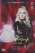 | エリザベート | 1996 | JA | mp4 | 480p | Kazuki Akira, Saki Asaji, Mayu Asamiya, Nao Ayaki, Shin Chiaki, Yuu Emao, Naoki Ema, Chihiro Itsuki, Aya Izumo, Tomo Kanda, Wataru Kozuki, Akira Kujou, Maya Kuon, Hikaru Manaka, Hitomi Marisa, Yuzumi Mari, Sei Matobu, Kou Mayuzuki, Kou Minoru, Kei Miyabi, Rio Natsukaze, You Natsumi, Ai Nishiki, Kei Nozomi, Ayumu Oohiro, Ryou Otowa, Akino Ryou, Jun Shibuki, Ayaka Shiraki, Saya Suzuna, Rio Takao, Tsukasa Tatsu, Maika Tomo, Hitomi Tsukikage | |
| エリザベート | 1996 | JA | mp4 | 480p | Mari Hanafusa, Maki Ichiro, Kei Aran, Tatsuki Kouju, Fubuki Takane, Yuu Todoroki | ||
| エリザベート | 1998 | JA | mp4 | SD | Mari Hanafusa, Asato Shizuki, Yoka Wao | ||
| エリザベート | 2002 | JA | mp4 | 480p | Jun Sena, Rei Otori, Sumire Haruno, Mao Ayabuki, Sakiho Juri, You Natsumi | ||
| エリザベート | 2002 | JA | mp4 | 480p | Tomu Ranju, Asuka Toono | ||
| 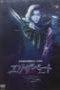 | エリザベート | 2005 | JA | mp4 | 480p | Nao Ayaki, Jun Sena | |
| エリザベート | 2006 | JA | mp4 | 480p | Asato Shizuki, Saki Asaji, Rei Otori, Ayaka Shiraki, Ko Minoru, Tatsuki Koju | ||
 |
エリザベート | 2006 | JA | mp4 | SD | Asato Shizuki, Saki Asaji, Rei Otori, Ayaka Shiraki, Ko Minoru, Tatsuki Koju | |
| エリザベート | 2007 | JA | mp4 | 720p | Mao Ayabuki, Yuuki Mirai, Natsuki Mizu, Kei Otozuki, Kaname Ouki, Tomomi Ritsu, Chihaya Saeki, Yuri Shirahane | ||
| エリザベート | 2009 | JA | mp4 | 480p | Hiromu Kiriya, Ryuu Koshino, Ruumi Nagina, Haruhi Ryouga, Masaki Ryuu, Jun Sena, Ai Shirosaku | ||
 |
エリザベート | 2012 | JA | mp4 | SD | Hikaru Asami, Nao Ayaki, Mari Hanafusa, Sumire Haruno, Jun Hatsukaze, Midori Hatsukaze, Maki Ichiro, Aya Izumo, Tatsuki Kouju, Wataru Kozuki, Rei Ootori, Yuu Shion, Yuri Shirahane, Asato Shizuki, Michiru Shu, Shio Suzumi, Fubuki Takane, Yuu Todoroki | |
| エリザベート | 2014 | JA | mp4 | 480p | |||
| エリザベート | 2014 | JA | mp4 | 480p | |||
| エリザベート | 2014 | JA | mp4 | 480p | Rio Asumi, Hana Ranno, Nozomi Futo, Toa Serika, Mizuki Takasho, Nanami Shiho, Yuma Rin, Kairi Hokusho | ||
| エリザベート | 2016 | JA | mp4 | 480p | Maki Ichiro, Saki Asaji, Fubuki Takane, Ko Minoru, Yu Emao, Asato Shizuki, Ayaka Shiraki, Wataru Kozuki, Hitomi Tsukikage, Nao Ayaki, Kei Aran, Sumire Haruno, Hikaru Asami, Yuhi Ozora, Jun Sena, Natsuki Mizu, Rei Otori, Hiromu Kiriya, Rui Shijo, Yuri Shirahane, Kaname Ouki, Masaki Ryu | ||
| エリザベート | 2016 | JA | mp4 | 576p | Hikaru Aizuki, Manato Asaka, Suzuho Makaze, Rion Misak | ||
| エリザベート | 2018 | JA | mp4 | 720p | |||
| エリザベート | 2016 | JA | mp4 | 480p | Mari Hanafusa, Yoshio Inoue, Songha, Mario Tashiro, Yuta Furukawa, Tatsuki Kohju, Michihiro Otani, Yuki Mirai | ||
| 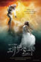 | エリザベート White | 2016 | JA | mp4 | 480p | Mari Hanafusa, Yu Shirota, Ikusaburo Yamazaki, Takanori Sato, Yuta Furakawa, Mayo Suzukaze, Michihiro Otani, Yuki Mirai | |
| オクラホマ! | 2006 | JA | mp4 | 480p | Izumi Aoki, Ruka Isshiki, Ruisu Ken, Hiromu Kiriya, Ryuu Koshino, Aya Mihou, Ai Shirosaki, Yuu Todoroki | ||
| ガイズ&ドールズ | 2015 | JA | mp4 | 480p | Kairi Hokusho, Fu Hinami, Yuzuru Kurenai, Yuzumi Mari, Chigusa Miki, Irisu Toki, Hiroki Nanami, Makoto Rei, Ren Mishiro | ||
| ガイズ&ドールズ | 2002 | JA | mp4 | 480p | Mistuki Akane, Moyu Asama, Kurara Emi, Kairi Hokushou, Aria Honami, Ruka Isshiki, Hiromu Kiriya, Ryuu Koshino, Subaru Kouki, Keika Kusunoki, Shiho Mihara, Anri Mimi, Yura Natsukawa, Reo Natsuki, Yuuhi Oozora, Tomomi Ritsu, Jun Shibuki, Hikaru Shijou, Maho Shiomi, Maki Taiju, Sarara Tsukifune, Yuga Yamato, Eri Yoshizuki | ||
| スカーレットピンパーネル | 2010 | JA | mp4 | 576p | Izumi Aoki, Yuki Aono, Rio Asumi, Mizuka Hanase, Hiromu Kiriya, Sonoka Kiryu, Ryu Koshino, Masaki Ryu, Kaito Seijo | ||
| スカーレットピンパーネル | 2017 | JA | mp4 | SD | Yuzuru Kurenai, Airi Kisaki, Makoto Rei, Hiroki Nanami, Yuzumi Mari, Chigusa Miki, Naoki Ema | ||
 |
チェ・ゲバラ | 2019 | JA | mp4 | 1080p | Yu Todoroki, Yuno Kazama, Ruu Kozuki | |
| ドラキュラ | 2011 | JA | mp4 | 576p | Yoka Wao, Mari Hanafusa, Konishi Ryousei, Natsumi Abe | ||
| ファントム | 2003 | JA | mp4 | SD | Youka Wao, Mari Hanafusa | ||
| ファントム | 2006 | JA | mp4 | 720p | Mao Ayabuki, Sumire Haruno, Aya Izumo, Sei Matobu, Ayane Sakurano | ||
 |
ファントム | 2011 | JA | mp4 | 480p | Harei Aine, Manato Asaka, Hikaru Hanagata, Tomu Ranju, Hana Ranno, Ichika Sakura, Kazuho Sou | |
| ファントム | 2018 | JA | mp4 | 1080p | Nozomi Futo, Kiho Maaya, Sakina Ayakaze, Sho Ayanagi, Jun Asami, Masumi Rika, Haruto Sono | ||
| ミー&マイガール | 1995 | JA | mp4 | 480p | Yuki Amami, Kayo Asano, Seika Kuze, Tsubasa Makoto, Asato Shizuki | ||
| ミー＆マイガール | 2008 | JA | mp4 | 480p | Hotaru Amano, Shino Asagiri, Rio Asumi, Renka Atsuki, Touya Enoki, Mizuka Hanase, Shizuku Hazakura, Reona Hibiki, Anji Hino, Ruisu Ken, Hiromu Kiriya, Sonoka Kiryuu, Misa Kyou, Aya Mihou, Yuria Moeka, Sunao Otoki, Hana Ranno, Kurea Remi, Masaki Ryuu, Kaito Seijou, Amane Takaki | ||
| ミー＆マイガール | 2008 | JA | mp4 | 576p | Rio Asumi, Kanami Ayano, Aya Izumo, Hiromu Kiriya, Ryuu Koshino, Noeru Misa, Haruhi Ryouga, Jun Sena, Ai Shirosaki | ||
| ミー&マイガール | 2013 | JA | mp4 | 480p | Reika Manaki, Masaki Ruy | ||
| ミー＆マイガール | 2016 | JA | mp4 | SD | Rio Asumi, Maria Kano, Toa Serika, Rei Yuzuka | ||
| ミー＆マイガール | 2016 | JA | mp4 | 480p | |||
| モーツァルト! | 2014 | JA | mp4 | 480p | Yoshio Inoue, Yūichirō Yamaguchi, Satomi Achiwa, Tatsuki Kohju, Sonim, Keigo Yoshino Yoshio Inoue, Mari Hanafusa, Masachika Ichimura, Junichi Takeoka, Keigo Yoshino | ||
| モーツァルト! | 2014 | JA | mp4 | 480p | Ikusaburo Yamazaki, Mari Hanafusa, Yūichirō Yamaguchi, Masachika Ichimura, Sumire Haruno, Aya HiranoSatomi Achiwa, Junichi Takeoka, Keigo Yoshino | ||
| ルートヴィヒii世 | 2000 | JA | mp4 | 480p | |||
| ルートヴィヒii世 | 2001 | JA | mp4 | 576p | Mire Aika, Rei Otori | ||
| レディ・ベス Flower Tokuten | 2018 | JA | mp4 | 480p | |||
| レディ・ベス | 2018 | JA | mp4 | SD | Yuta Furukawa, Aya Hirano, Zen Ishikawa, Kazuki Kato, Miou Kazune, Yuki Mirai, Mayo Suzukaze, Yūichirō Yamaguchi, Keigo Yoshino | ||
| レディ・ベス | 2018 | JA | mp4 | SD | Mari Hanafusa, Ikusaburo Yamazaki, Yuichiro Yamaguchi, Mayo Suzukaze, Rie Yoshizawa, Genki Hirakata, Miou Kazune (Anne Boleyn), Keygo Yoshino, Zen Ishikawa | ||
| ローマの休日 | 2016 | JA | mp4 | 480p | Sagiri Seina, Miyu Sakihi, Sho Ayanagi, Dai Hosho, Masumi Rika, Haruto Sono | ||
| ロミオとジュリエット | 1999 | JA | mp4 | 480p | Natsuki Mizu, Kanami Ayano | ||
| ロミオとジュリエット | 2010 | JA | mp4 | 480p | Nishiki Ai, Itsuki Chihiro, Ouki Kaname, Tenju Mitsuki, Kawai Mizuho, Ema Naoki, Shirahana Remi, Yuzuki Reon, Mizuki Ryou, Suzumi Shio, Nene Yumesaki, Otohana Yuri, Kurenai Yuzuru | ||
| ロミオとジュリエット | 2011 | JA | mp4 | 480p | Yumemi Asaki, Yuu Asuka, Oto Ayana, Midori Haruka, Chihiro Itsuki, Mimi Maihane, Aki Misuzu, Mao Oonagi, Kei Otozuki, Tooma Ozuki, Seina Sagiri, Kurama Saou, Haruto Souno, Ami Yumeka | ||
| ロミオとジュリエット | 2012 | JA | mp4 | 1080p | Masaki Ryu, Reika Manaki, Rio Asumi, Kaito Hoshijo, Rurika Miya, Naoki Ema, Keiko Miho | ||
 |
ロミオとジュリエット | 2012 | JA | mp4 | 1080p | Masaki Ryu, Reika Manaki, Rio Asumi, Kaito Hoshijo, Rurika Miya, Naoki Ema, Keiko Miho | |
| ロミオとジュリエット | 2013 | JA | mp4 | 720p | Reon Yuzuki, Nene Yumesaki | ||
| 仮面の男 | 2011 | JA | mp4 | 480p | Kei Otozuki, Mimi Maihane, Sagiri Seina, Aki Misuzu, Toma Ozuki, Makoto Renjo, Aika Ayu, Masumi Rika, Yumemi Asaki, Ayana Oto, Rin Maisaki, Seshiru Daigo, Kurama Sao | ||
| 南太平洋 | 2013 | JA | mp4 | 720p | Naoki Ema, Fuu Hinami, Chihiro Itsuki, Airi Kisaki, Suzuho Makaze, Yuu Todoroki | ||
| 晴れた日に永遠が見える | 1996 | JA | mp4 | SD | Mari Hanafusa, Fubuki Takane, Yoka Wao | ||
| 雨に唄えば | 2008 | JA | mp4 | 480p | Kei Aran, Yuga Yamato, Sei Matobu, Hana Hizuki, Akira Man, Kyoko Fuji, Misao Hoshihara, Aki Itsumine, Yuzumi Mari, Hikari Asamine, Miki Asazono |